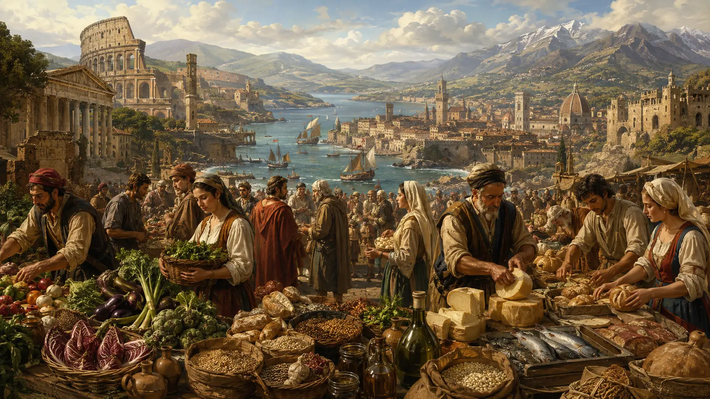
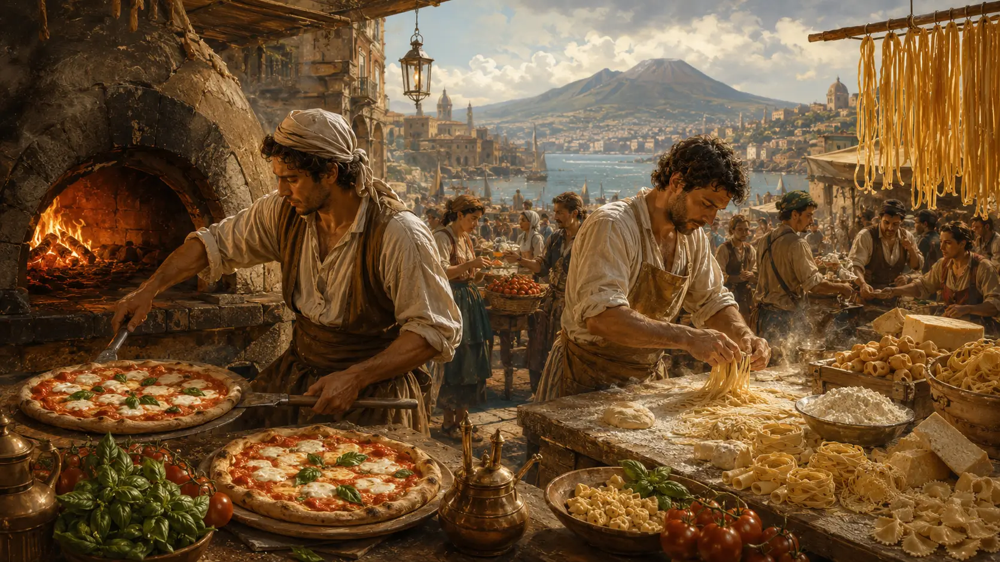
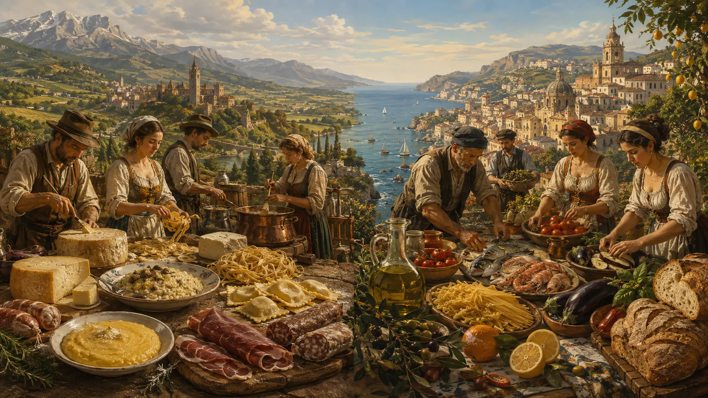
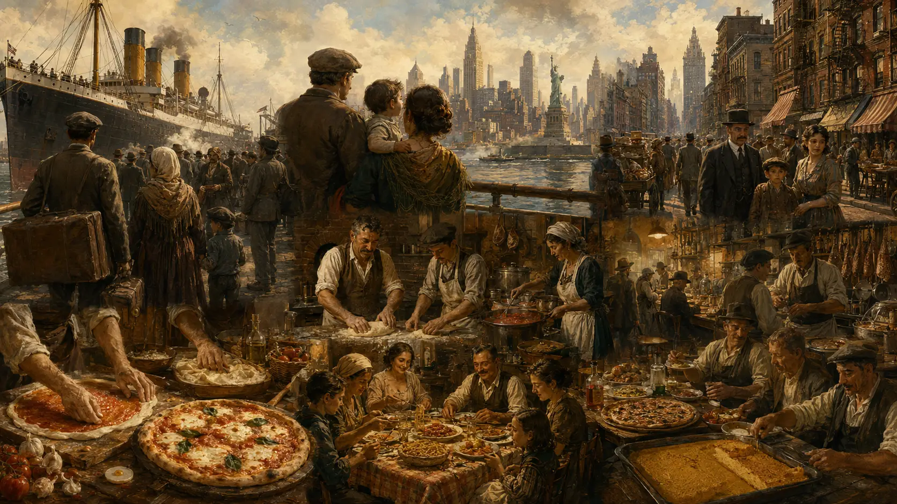

1. Italy Before Italian Cuisine Existed
Today, Italian cuisine feels almost inseparable from the idea of Italy itself. Pasta, pizza, olive oil, cheese, cured meats and countless regional specialties have become symbols of the country around the world. In 2025, Italian cooking and its associated traditions were even added to UNESCO’s Representative List of the Intangible Cultural Heritage of Humanity, recognition centered not simply on particular recipes but on the knowledge, rituals and social practices surrounding food.
Yet there is a paradox at the heart of that global image:
Italian cuisine began taking shape long before a unified Italy existed.
For most of the history covered by this story, the Italian peninsula was not governed as a single nation. Before the creation of the Kingdom of Italy in 1861, the territory was divided among kingdoms, duchies, republics, papal lands, city-states and areas controlled or influenced by foreign powers. Political borders changed repeatedly, and cities that today belong to the same country often developed for centuries under very different governments, economies and cultural influences.
Food followed the same fragmented pattern.
People did not wake up in medieval Florence, Renaissance Venice or eighteenth-century Naples thinking that they were preparing one common national cuisine. Their cooking was overwhelmingly shaped by what grew nearby, what could be raised locally, what arrived through trade, what their social class could afford and which traditions had been passed down within their town or territory. The strong localism that characterized Italian political and cultural history also became deeply rooted in eating habits. Treccani notes that this long-standing political and cultural polycentrism corresponded with food customs strongly tied to individual territories.
Geography made those differences even stronger. The Italian peninsula stretches from the Alps deep into the Mediterranean, crossing dramatically different climates and landscapes within a relatively small area. Mountain valleys, fertile northern plains, central hills, long coastlines, volcanic soils and Mediterranean islands offered different ingredients and imposed different limitations. The result was never simply one culinary tradition repeated from north to south, but a dense mosaic of local food cultures. Even modern descriptions of Italian cuisine continue to emphasize that its defining characteristic is precisely this extraordinary regional diversity.
In some northern areas, dairy products, animal fats, rice and grains became particularly important. Across much of central and southern Italy, olive oil played a greater role, while wheat, legumes, vegetables, fruit and coastal seafood developed their own local traditions. But even those broad divisions can be misleading if taken too literally. Neighboring towns could prepare similar ingredients differently, and recipes, techniques and terminology often changed across surprisingly short distances.
Centuries before modern Italy existed, food was therefore already becoming intensely connected to place.
This diversity was not created by isolation alone. The peninsula occupied a central position in the Mediterranean and sat at the intersection of major commercial, political and cultural networks. Ports and trading centers connected Italian territories with Europe, North Africa, the eastern Mediterranean and, eventually, the wider world. Conquest and foreign rule also left important traces. Sicily, for example, developed a culinary history influenced by the many societies that controlled or settled the island; Oxford Reference specifically notes the powerful Arab influence on Sicilian cuisine during the early Middle Ages.
Italian cooking was therefore never a completely closed tradition. Long before globalization became a modern concept, the foods eaten across the peninsula were already being shaped by movement: merchants carrying ingredients, armies crossing borders, rulers bringing courtly customs, religious institutions preserving particular practices and ordinary people adapting whatever was available to them.
There was another division just as important as geography: wealth.
The food served in aristocratic courts and wealthy urban households could be dramatically different from the meals eaten by peasants and laborers only a few kilometers away. Elite cuisine had greater access to expensive meats, elaborate preparations, imported goods and professional cooks. For much of the population, daily survival depended instead on comparatively inexpensive and locally available foods: cereals, breads, porridges, legumes, vegetables and other ingredients that could stretch limited resources.
This distinction matters because many dishes later celebrated as expressions of Italian authenticity emerged not from luxury, but from the ability to transform modest ingredients into satisfying food. What today may appear beautifully simple on a restaurant plate often belongs to a much longer history of necessity, seasonality and careful use of what a household possessed.
The modern idea of clearly defined “regional cuisines” also developed gradually. Historical food traditions were unquestionably local, but scholars caution against imagining that today’s twenty administrative regions always existed as neat culinary categories. The process of identifying, naming and organizing foods as specifically Tuscan, Piedmontese, Sicilian, Emilian or belonging to other regional traditions became increasingly important as Italians attempted to understand the cultural diversity of the newly unified country.
That process became especially significant after 1861.
Political unification created an Italian state, but it did not instantly create a single Italian way of eating. Local traditions remained powerful, and linguistic as well as cultural differences were still enormous. One of the figures who helped bridge those worlds was Pellegrino Artusi, whose La scienza in cucina e l’arte di mangiar bene was first published in 1891.
Artusi gathered and organized recipes associated with different parts of the country, from Neapolitan preparations to Genoese, Tuscan and other local traditions. His work did not erase regional differences; in many ways, it demonstrated just how important they were. But by presenting those traditions together to a national readership and using an accessible Italian culinary language, his book helped construct something new: the idea that these different foods could all belong to a shared Italian culinary culture. Treccani describes Artusi as a major force in giving unity and systematic form to Italy’s national and regional gastronomic traditions, while the Accademia Italiana della Cucina recognizes him as a foundational figure in the development of Italian cuisine.
And therein lies one of the most important keys to understanding Italian food.
Italy did not create a national cuisine by replacing its local cuisines.
It created one by connecting them.
The foods of Naples did not need to become the foods of Bologna. Sicily did not have to cook like Tuscany, and Venice did not have to abandon centuries of its own traditions. Instead, over time, Italians increasingly began to see these radically different culinary identities as pieces of a larger cultural whole.
That apparent contradiction — extreme local diversity combined with an increasingly powerful national identity — would eventually become one of Italian cuisine’s greatest strengths.
Before Italian food could conquer the world, Italy first had to discover that hundreds of local traditions could tell one much larger story.
2. Ancient Rome and the First Foundations
If there was no single Italian cuisine before the creation of modern Italy, it is tempting to search for its beginning much further back in time — in Ancient Rome.
The connection seems obvious. Rome emerged in the heart of the Italian peninsula, built an empire across the Mediterranean and developed an extraordinarily sophisticated food culture. Many ingredients associated with Italy today were already fundamental to Roman life: wheat, olive oil, wine, vegetables, legumes, fruit, cheese and bread.
But there is an important distinction to make.
Ancient Roman cuisine was not simply Italian cuisine two thousand years earlier.
Roman food belonged to a different world, shaped by ingredients, tastes, economic structures and trade networks that would change dramatically over the following centuries. Some of its foundations survived. Others virtually disappeared. And many foods that modern diners instinctively associate with Italy had not even reached Europe yet.
Understanding that difference is essential to understanding where Italian cuisine actually came from.
The Mediterranean foundation
For ordinary Romans, food was built primarily around agriculture rather than the extravagant banquets that later became famous in paintings, films and popular culture. Grain was particularly important, alongside legumes, olive oil, wine and other relatively accessible foods. Cambridge scholarship on the food supply of ancient Rome identifies grain, legumes, olive oil, wine and meat among the principal components of the city's food system, while archaeological and historical evidence shows cereals, vegetables and other plant foods playing a major role throughout the Roman world.
Cereals could be consumed in several forms. Porridges made from grains were deeply established in Roman diets, while bread became increasingly important, particularly as urban production expanded. Archaeological research at Pompeii has identified dozens of bakeries and evidence of a shift toward larger-scale commercial bread production by the first century AD. Even there, however, poorer inhabitants still depended heavily on cereal-based porridges.
This agricultural foundation created one of the clearest connections between ancient Mediterranean food and later Italian cooking.
Bread, oil and wine were already much more than ingredients. They were pillars of everyday life.
Olive cultivation was widespread in suitable parts of the peninsula and throughout the Mediterranean, and oil served numerous culinary purposes. Wine was equally important, produced in many regions and traded on an enormous scale. Archaeological evidence from the area around Pompeii, for example, documents intensive cultivation of both vines and olives, alongside amphorae used to transport wine and oil.
Many familiar ingredients were also available: onions, cabbages, leeks, lentils and other legumes, figs, grapes, apples, pears, nuts and herbs. Cheese and eggs were eaten as well, while fish, shellfish, pork and other meats appeared with varying frequency depending heavily on location, wealth and availability.
In that sense, part of the landscape of the modern Italian table would have been recognizable to a Roman.
But only part of it.
An Italian kitchen without tomatoes
Imagine walking into an ancient Roman market and trying to assemble what the modern world considers a classic Italian meal.
There would be no tomatoes.
No potatoes.
No maize for polenta.
No bell peppers or chili peppers.
And no chocolate.
Those plants originated in the Americas and could not enter European cooking until after transatlantic contact began at the end of the fifteenth century. Their eventual arrival would transform European diets and, centuries later, become enormously important to several Italian regional cuisines.
This makes one of the great ironies of Italian culinary history impossible to ignore:
Some of the ingredients that now look the most “Italian” were completely unknown to the Romans.
A Roman could eat wheat, olive oil and cheese. A Roman could drink Italian wine. But a plate of spaghetti with tomato sauce, a pizza topped with tomatoes or polenta made from American maize belonged to a future that ancient Rome could never have imagined.
Those transformations will become central later in our story.
The flavor that disappeared
If some Roman ingredients seem familiar, Roman seasoning could be remarkably different.
One of the most important condiments was garum, a fermented fish sauce produced from fish and salt and used extensively throughout the Roman world. Archaeological remains at Pompeii include amphorae containing fish bones, scales and residues identified with garum production, while surviving Roman culinary texts demonstrate just how frequently fish sauces appeared in prepared dishes.
Garum was not an obscure curiosity.
It was one of Roman cooking's defining flavors.
Different qualities could be produced and traded, and fish-processing industries existed across large parts of the Empire. Salted and fermented fish products allowed marine resources to be preserved and transported far from the coast, creating an important commercial network.
To modern diners, comparisons with contemporary Asian fish sauces can help explain the idea, although Roman garum belonged to its own culinary context.
And it reveals something crucial: Roman cuisine was often constructed around flavor combinations that do not fit neatly into modern Italian expectations.
The surviving collection traditionally known as Apicius, or De re coquinaria, preserves hundreds of recipes involving ingredients such as fish sauce, wine, vinegar, honey, reduced grape must, herbs, pepper and aromatic spices. Sweet, salty, sour and intensely seasoned flavors could appear together in the same preparation. The collection survives from Late Antiquity and should not be treated as a simple record of what every Roman ate; it represents a sophisticated culinary tradition particularly useful for understanding elite or elaborate cooking.
One surviving recipe for vegetables, for example, combines greens with pepper, cumin, fish-based seasoning and concentrated grape must. Other preparations mix honey, vinegar, wine and spices with meat or fish.
The result is a fascinating paradox.
Ancient Rome helped establish some of the Mediterranean foundations that would remain important in Italy for centuries, yet much of its actual culinary flavor profile later faded.
Garum eventually disappeared from everyday Italian cooking. The extraordinarily elaborate sweet-and-sour sauces of elite Roman cuisine changed. New ingredients arrived. Religious customs shifted. Political structures collapsed. Trade routes were reorganized.
The kitchen evolved with them.
The empire brought the world to Rome
Rome was not culturally or gastronomically isolated.
As Roman power expanded, food moved across the Empire alongside soldiers, merchants, administrators and migrants. Grain could arrive in the capital from distant provinces, while wine, olive oil, fish products and luxury goods circulated through extensive Mediterranean trading systems. Rome's enormous population depended partly on these networks, and Egypt became especially important as a major source of grain for the imperial capital.
Luxury consumers could reach even farther.
Roman commercial networks connected the Mediterranean with Arabia, East Africa and the Indian Ocean, allowing expensive eastern goods to reach wealthy consumers. Archaeological and documentary evidence indicates substantial Roman trade with eastern regions, especially during the first and second centuries AD.
This matters because one of the recurring themes of Italian culinary history begins here:
Italian food was never created entirely from ingredients and ideas that originated inside Italy.
Long before tomatoes crossed the Atlantic or coffee arrived from outside Europe, the peoples of the peninsula were already absorbing products and culinary influences carried through trade, conquest and migration.
That pattern would repeat again and again.
The food of the rich and the food of everyone else
Another misleading image of Roman cuisine comes from the famous banquet.
Ancient authors wrote about spectacular dinners, unusual meats and displays of elite excess, and archaeology confirms that wealthy Roman dining could be highly elaborate. Academic research describes a genuinely differentiated upper-class culinary culture, involving specialized preparation, multiple dishes and sophisticated presentation.
But those meals represented only a small part of Roman society.
For most people, food was far more practical.
Access to ingredients was shaped by wealth and status, and food insecurity remained a serious concern in the ancient world. Much of the population relied heavily on staple crops and inexpensive foods, while luxury ingredients and elaborate preparations belonged disproportionately to those with greater resources.
Pompeii provides an extraordinary glimpse of this everyday world. Archaeology has uncovered commercial bakeries, food-production facilities and street-side establishments where prepared food and wine were sold. The evidence suggests an urban food culture that included eating outside the household and purchasing prepared meals — a reminder that convenience food is hardly a modern invention.
This division between elite cuisine and the food of ordinary people would remain important long after Rome disappeared.
Indeed, one of the most enduring characteristics of later Italian cooking would emerge from exactly the opposite of aristocratic excess: making extraordinary food from ordinary ingredients.
What did Rome actually leave behind?
The Roman contribution to Italian cuisine is therefore best understood not as a collection of recipes passed intact from antiquity to the present, but as a set of deep foundations.
Agriculture based around grains, vines and olives had already transformed the peninsula. Bread, wine and olive oil carried economic, social and cultural importance. Vegetables, legumes, cheeses, herbs and preserved foods formed part of established Mediterranean food systems. Regional agricultural specialization already mattered. Markets and trade connected local diets to a much larger world.
Perhaps most importantly, food was already deeply connected with place, status, identity and social life.
Some particular foods also demonstrate remarkable historical continuity. Italian breads, cheeses, olive oils, wines and cured or preserved products belong to traditions that changed dramatically over time but rested on agricultural practices with ancient roots.
Yet continuity should never be confused with immobility.
There is no straight culinary line from an ancient Roman recipe to a modern Italian one. The collapse of the Western Roman Empire in the fifth century transformed political and economic life across the peninsula. Populations shifted. Trade networks changed. New rulers arrived. Christianity reshaped cultural practices. Byzantine, Germanic, Arab, Norman and other influences would subsequently affect different parts of the territory.
And Italy itself would remain politically divided for more than a thousand years.
Rome had provided important foundations.
But the cuisine that the world would eventually call Italian was still centuries away.
Its next great transformation would happen not inside a unified country, but across a fragmented medieval peninsula where cities, kingdoms, monasteries, courts, merchants and foreign powers would begin turning those ancient foundations into something far more diverse.
That is where the true explosion of Italy's regional cuisines begins.
3. The Middle Ages: A Country of Regional Kitchens
When the Western Roman Empire collapsed in the fifth century, the Italian peninsula did not simply lose an emperor.
It lost the political structure that had connected much of its territory to a single imperial system.
Over the centuries that followed, Italy became a constantly shifting mosaic of kingdoms, duchies, republics, papal territories, independent cities and regions controlled by foreign powers. Byzantines, Lombards, Franks, Arabs, Normans and others ruled different parts of the peninsula at different times, while powerful cities increasingly developed their own political and economic identities.
For the history of Italian food, this fragmentation was decisive.
There was no medieval government capable of imposing a single culinary culture from the Alps to Sicily. There was no national market distributing identical ingredients everywhere, no standardized collection of recipes and certainly no concept of a unified “Italian cuisine” in the modern sense.
Instead, every territory evolved according to its own geography, agriculture, rulers, commercial connections and traditions.
The Middle Ages did not create one Italian cuisine. They created the conditions for many Italian cuisines to emerge.
And those differences would never entirely disappear.
After Rome: the landscape changes
The disappearance of Roman political authority did not erase Roman agriculture overnight. Wheat, vines, olives, legumes and many other crops continued to be cultivated, while bread, wine and olive oil retained enormous economic and cultural importance.
But the world surrounding them had changed.
Trade became less uniform, cities changed in size and function, political authority fragmented and different populations established themselves across the peninsula. Agricultural practices increasingly combined the Mediterranean traditions inherited from Rome with food cultures associated with peoples arriving from continental Europe.
The Lombards, who entered Italy in the sixth century and eventually controlled large parts of the north and center, belonged to a world in which livestock, woodland resources and animal products played an important role. Treccani notes the broader influence of Germanic food traditions on medieval Italian habits, including the importance of pigs, lard, cured meats, milk, butter and cheese.
This did not mean that northern Italy suddenly abandoned olive oil or Roman agricultural traditions. Culinary change rarely happens so cleanly. Instead, different habits overlapped.
That mixture contributed to a distinction that would become increasingly visible over the centuries: some northern areas developed stronger traditions involving animal fats, butter, dairy products and pork, while olive oil remained especially important in many central and southern territories.
These were tendencies rather than rigid borders, but they demonstrate how political history, climate and agriculture slowly produced different culinary landscapes.
And those landscapes were becoming increasingly local.
A peninsula divided into different worlds
Medieval Italy could contain remarkably different societies within relatively short distances.
Venice was building a maritime commercial empire.
Cities such as Genoa and Pisa were connected to Mediterranean trade.
Florence would grow into one of Europe's great financial and commercial centers.
The Papal States controlled a large portion of central Italy.
Southern Italy passed through Byzantine, Lombard, Norman and other political structures.
And Sicily experienced one of the most extraordinary cultural transformations anywhere in medieval Europe.
Each of these worlds had access to different resources and different networks.
A coastal city could develop around fish, salt and maritime commerce. Mountain communities depended more heavily on livestock, preserved foods and crops capable of surviving harsher environments. Fertile plains could support grains and cattle. Wealthy commercial cities could obtain imported ingredients unavailable to poorer inland communities.
The idea of cuisine therefore remained tied less to a nation than to a city, territory or local environment.
That local identity is visible even in later medieval and Renaissance culinary texts. Treccani notes that historical Italian recipes were often identified through individual cities — preparations described according to the usages of Milan, Genoa, Bologna or Naples, for example — rather than according to a single national culinary model.
The boundaries of today's Italian regions did not yet define culinary identity in the way modern tourism sometimes suggests.
But the deeper phenomenon behind regional cuisine was already unmistakable:
Where you lived determined how you ate.
Sicily: where the Mediterranean met
Nowhere illustrates medieval Italy's cultural complexity better than Sicily.
Its location in the center of the Mediterranean made the island a meeting point for civilizations for thousands of years. After periods of Roman and Byzantine rule, Muslim forces began the conquest of Sicily in the ninth century. Palermo fell in 831, and Muslim control eventually extended across almost the entire island during the following century.
The consequences went far beyond politics.
Islamic Sicily became closely connected with North Africa and the wider Muslim Mediterranean. Agricultural systems were reorganized and expanded, while irrigation techniques and new or increasingly important crops transformed parts of the island's landscape.
Treccani identifies crops including citrus fruits, mulberries, sugar cane and date palms, together with important improvements in irrigation, among the agricultural changes associated with Muslim Sicily.
Sugar is particularly significant.
Long before refined sugar became an inexpensive everyday product in Europe, sugar cane cultivation in Sicily contributed to a sophisticated tradition of sweets that would continue evolving under later rulers. Citrus fruits, nuts, spices and sweet preparations would eventually become some of the most recognizable characteristics of Sicilian cooking.
But it would be misleading to imagine that Muslim influence simply replaced everything that came before.
Sicily's culinary culture was cumulative.
Greek, Roman and Byzantine traditions remained part of the island's history. Muslim rule added new agricultural knowledge, ingredients and connections. Beginning in the eleventh century, Norman conquest created yet another political order, one that continued to incorporate Arab and Byzantine cultural elements rather than eliminating them immediately. The court of the Norman Kingdom of Sicily became famous for this extraordinary mixture of Latin Christian, Greek Byzantine and Islamic traditions.
Food developed within that same environment of interaction.
The result was not simply “Arab cuisine in Italy,” but a distinctive Sicilian tradition created through centuries of cultural exchange.
Its legacy would prove enormous.
Some of the most famous foods eventually associated with Sicily — particularly its sweets, citrus-based preparations and certain uses of nuts and sugar — belong to a culinary landscape profoundly shaped by Mediterranean contact.
And Sicily also played an important role in another story that deserves an entire section of its own:
the history of pasta.
We will return to that later.
Venice and the taste of the East
At the opposite end of the peninsula, another culinary transformation was taking place.
Venice rose from the lagoons of the northern Adriatic to become one of medieval Europe's great commercial powers. Its merchants connected western Europe with Byzantine and eastern Mediterranean markets, and food traveled along those routes together with silk, metals and luxury goods.
Among the most valuable commodities were spices.
Pepper, cinnamon, cloves, nutmeg and other aromatics traveled enormous distances before reaching European kitchens. Their price meant that they were particularly associated with wealth, status and urban elites, although patterns of consumption varied considerably.
Venetian involvement in this trade had deep medieval roots. Treccani records Venetian participation in the spice trade from at least the early ninth century and describes spices as one of the products that eventually became fundamental to medieval commerce. Between the thirteenth and fifteenth centuries, Venice occupied an especially powerful position in European trade involving spices arriving from Asia.
The effect on elite cooking was unmistakable.
Medieval European recipes could use spices far more aggressively than many modern Italian dishes. Pepper, cinnamon, saffron, cloves, nutmeg and other aromatics appeared in meat preparations, sauces and even wine. Treccani describes extensive spice use as one of the characteristic features of European cooking between roughly the eleventh and fourteenth centuries.
This creates another surprising break between medieval and modern Italian cuisine.
Today, Italian cooking is frequently praised for allowing a relatively small number of high-quality ingredients to retain their individual flavors.
Medieval aristocratic cooking could follow almost the opposite philosophy.
Complex mixtures of spices, sweet and acidic ingredients, sauces and elaborate preparations were often signs of sophistication.
Once again, the cuisine we now recognize as Italian was still evolving.
The monasteries: quiet centers of food culture
Not every important development occurred in royal courts or commercial ports.
Across medieval Italy, monasteries were major economic and agricultural institutions. They controlled land, cultivated crops, raised animals, preserved foods and organized communities whose daily routines were heavily influenced by religious rules.
Food had practical as well as spiritual significance.
Bread occupied a fundamental place in Christian monastic culture, and early medieval monastic communities were expected to participate in food production as part of ideals of humility and self-sufficiency.
Religious dietary rules also influenced what was eaten and when. Restrictions on meat during particular days and periods increased the importance of fish, vegetables, legumes and other alternatives in Christian food culture.
The monasteries were not completely isolated from wider commerce either.
Archaeological and documentary research on the ninth-century Abbey of San Vincenzo al Volturno in southern Italy, for example, shows that the community obtained significant quantities of preserved fish products, including dried fish, eels and botargo.
Monastic communities therefore participated in systems of cultivation, preservation and exchange while maintaining distinctive dietary practices.
Their importance should not be exaggerated into the popular myth that monks personally “invented” every traditional cheese, liqueur or preserved food later associated with monasteries. Such origin stories often become much more certain in modern retellings than the historical evidence allows.
What can safely be said is that monasteries were important centers of agricultural knowledge, food production, preservation and continuity during the medieval period.
The food of the powerful
Meanwhile, the courts of medieval Italy developed an entirely different culinary world.
Food could communicate status.
A wealthy noble household could afford large quantities of meat, imported spices, sugar, elaborate sauces and the labor required to transform food into spectacular presentations. A banquet was not merely an opportunity to eat; it could be a demonstration of political power and social hierarchy.
Medieval banquets played an important role in elite social life, especially during weddings, diplomatic encounters, religious celebrations and other major events.
The more complex the preparation and the more expensive the ingredients, the more effectively a host could demonstrate wealth.
Spices were particularly useful for this purpose because their origin and cost made them visible markers of access to international commerce. Sugar, which remained expensive, could serve similar purposes. Elaborate pastries, meat preparations, sauces and combinations of sweet and savory flavors increasingly defined high-status culinary culture.
By the later Middle Ages, this world was sophisticated enough to produce written culinary traditions.
Italian technical culinary vocabulary can be documented from at least the early fourteenth century, and surviving medieval recipe collections reveal a professional cooking culture already capable of describing complex techniques and preparations.
These manuscripts are invaluable.
But they also present a problem.
The people whose recipes were most likely to be written down were not necessarily representative of the majority of the population.
The food of the poor left fewer written records.
The invisible cuisine of ordinary people
Most medieval Italians did not eat like princes.
Peasant families and poorer urban workers depended overwhelmingly on what could be produced locally and obtained cheaply. Cereals remained essential, but wheat bread was not universally available in equal quality or quantity. Other grains could be turned into breads, porridges or similar preparations.
Legumes were invaluable sources of nutrition.
Beans available in Europe before the Columbian Exchange, peas, chickpeas, lentils and broad beans could help sustain populations that consumed meat less frequently than elites. Cabbages, onions, leafy vegetables, herbs and seasonal produce were important, while chestnuts became crucial in some mountainous areas.
Pigs were particularly useful because almost the entire animal could be consumed or preserved. Salting, drying and curing allowed meat to survive beyond the slaughter season, contributing to traditions that would later produce extraordinary varieties of Italian salumi.
But medieval necessity encouraged something even more fundamental.
Waste was a luxury many households could not afford.
Stale bread could be reused.
Vegetables could be transformed into soups.
Small quantities of meat or animal fat could flavor much larger dishes.
Preservation could extend the life of seasonal abundance.
Recipes changed according to what was available rather than according to rigid written instructions.
This mentality — extracting maximum flavor and nourishment from limited ingredients — would become one of the deepest themes in Italian culinary history.
Centuries later, many celebrated Italian dishes would be described through concepts such as cucina povera, the cooking associated with ordinary people and economical ingredients.
The exact modern expression belongs to a later historical context, but the underlying reality was already very old.
Extraordinary food did not always begin with extraordinary ingredients.
Christianity changed the calendar of eating
Religion also created a culinary rhythm shared across much of medieval Europe.
The Christian calendar distinguished periods of feasting from periods of fasting and abstinence. On days when meat consumption was restricted, fish could become particularly important, especially for those who could afford it or had access to preserved products.
This affected markets, preservation methods and culinary creativity.
Fresh fish naturally mattered most near coasts, rivers and lakes, but salted and dried fish could travel far inland. Monastic evidence demonstrates that preserved seafood could move considerable distances, while commercial networks increasingly connected inland cities with coastal producers.
Religious practice therefore influenced more than individual beliefs.
It helped determine demand for particular foods and established recurring patterns in how people ate throughout the year.
Combined with agricultural seasonality, the result was a cuisine deeply governed by time.
There was a time for fresh produce.
A time for slaughter.
A time for preservation.
A time for fasting.
And a time for feasting.
Modern supermarkets would eventually weaken many of these limitations, but medieval cooking was inseparable from them.
The beginning of a culinary network
Despite political fragmentation, medieval Italian food cultures were not isolated islands.
Quite the opposite.
Cities traded with one another. Merchants crossed political borders. Pilgrims traveled toward Rome and other religious centers. Universities attracted students and scholars. Courts exchanged cooks and customs. Soldiers and rulers moved between territories. Maritime republics connected Italian ports with distant markets.
Recipes and techniques traveled with people.
That movement explains an apparent contradiction that would eventually define Italian cuisine:
Italian cooking became intensely local while constantly borrowing from elsewhere.
A preparation could originate in one territory and appear elsewhere in modified form. Similar dishes could acquire different names. Imported ingredients could become integrated so thoroughly that later generations considered them local traditions.
By the late medieval and early Renaissance periods, culinary texts were already revealing this circulation. Recipes associated with particular cities existed alongside preparations whose ideas traveled across political borders.
Italy was divided.
Its kitchens were connected.
There was still no “Italian cuisine”
By the end of the Middle Ages, many of the structures necessary for the later development of Italian cuisine were already present.
Different territories had established strong food identities.
Northern and southern agricultural traditions were diverging in important ways.
Sicily had absorbed profound Mediterranean and Islamic influences.
Venice and other commercial cities were bringing distant ingredients into Italian kitchens.
Monasteries maintained agricultural and food-production traditions.
Urban courts supported professional cooks and increasingly elaborate gastronomy.
Ordinary people developed ingenious ways to survive on inexpensive local ingredients.
And recipes were beginning to circulate in written form.
Yet it would still be misleading to call all of this a single national cuisine.
A cook in medieval Venice and a farmer in Sicily inhabited profoundly different food worlds. A wealthy Florentine merchant could obtain ingredients unavailable to a mountain household only a few days' travel away. Political borders, geography, wealth and trade mattered enormously.
There was no culinary center telling the peninsula how Italy was supposed to taste.
That would become its strength.
Because when a recognizable Italian cuisine finally began to emerge centuries later, it would not be built from one tradition.
It would be built from hundreds of them.
And before those traditions could be connected into a national story, something even more dramatic was about to happen.
Ships crossing the Atlantic would begin carrying unfamiliar plants back to Europe.
Among them was a small American fruit that initially seemed strange and exotic.
Eventually, it would become almost impossible to imagine Italian food without it.
The tomato was coming.

4. The Ingredients That Came From Abroad
There is a simple experiment that reveals just how international the history of Italian cuisine really is.
Remove every major ingredient that originated outside Europe or reached the Italian peninsula through distant trade and cultural exchange.
The tomato disappears.
Maize disappears.
Potatoes disappear.
Many of the beans now common in Italian cooking disappear.
Peppers disappear.
Chocolate disappears.
Coffee disappears.
Rice, citrus fruits, sugar cane and several spices have their own long histories of migration into the peninsula.
What remains would still contain wheat, grapes, olives, cheeses, meats, Mediterranean vegetables and many other ancient ingredients. It would still be recognizable as part of the food culture that developed in Italy.
But it would not be the Italian cuisine the modern world knows.
That is because one of the greatest misconceptions about traditional food is the assumption that authenticity requires isolation.
Italian culinary history suggests almost the opposite.
Some of Italy's strongest traditions were created by taking foreign ingredients and making them unmistakably Italian.
Italy had always borrowed ingredients
The process did not begin with the discovery of the Americas.
As we have already seen, the Italian peninsula had been connected to Mediterranean and Eurasian trading networks for centuries. Muslim rule in Sicily helped spread or intensify the cultivation of crops such as citrus fruits, sugar cane, rice, pistachios, saffron and melons, while commercial centers such as Venice connected Italian consumers with spices and other products arriving from the eastern Mediterranean and Asia. Treccani specifically identifies rice, sugar cane, pistachios, saffron and citrus fruits among crops that expanded in Sicily under Arab rule.
Rice provides a particularly important example.
Originally domesticated in Asia, it eventually became deeply associated with northern Italy, especially the irrigated landscapes of Piedmont and Lombardy. By the late fifteenth century, rice cultivation was being actively expanded under the Sforza rulers of Milan, long before dishes such as risotto became internationally recognized symbols of northern Italian cooking.
An ingredient could therefore travel thousands of kilometers, adapt to Italian soil and eventually become so deeply embedded in regional culture that its foreign origin became almost irrelevant.
That pattern was already centuries old.
Then, at the end of the fifteenth century, it accelerated on an unprecedented scale.
1492 changed the European kitchen
The voyages connecting Europe permanently with the Americas initiated what historians commonly describe as the Columbian Exchange: the massive movement of plants, animals, diseases and people between the Old and New Worlds.
Its human consequences were enormous and often catastrophic, particularly for Indigenous populations of the Americas.
Its agricultural consequences were equally transformative.
Europe encountered plants that its inhabitants had never known: maize, potatoes, tomatoes, cacao, several varieties of beans, peppers and numerous types of squash, among many others. Treccani identifies maize, beans, potatoes, tomatoes, peppers and squashes among the American crops that entered European food systems after sustained transatlantic contact.
But these ingredients did not immediately become European staples.
Arrival and acceptance were two very different things.
Some were initially treated as botanical curiosities. Others were grown primarily as animal feed. Some were distrusted. Others required generations of experimentation before people understood how best to cultivate and cook them.
The history of Italian food after 1492 was therefore not a sudden revolution.
It was a slow transformation.
And nothing illustrates that transformation better than the tomato.
The stranger that became the symbol of Italy
Few ingredients seem more Italian today than the tomato.
It is difficult to imagine Neapolitan pizza without it.
It is central to countless pasta sauces.
It appears in dishes from Sicily to Tuscany, Campania to Emilia-Romagna, and its red color has become part of the global visual identity of Italian food.
Yet the tomato did not exist anywhere in Europe before contact with the Americas.
Its wild ancestors developed in South America, while domestication and cultivation occurred in the Americas before Europeans encountered the plant. Tomatoes subsequently reached Europe during the sixteenth century through the expanding Spanish imperial world.
In Italy, however, the plant did not immediately conquer the kitchen.
Research into New World plants in early modern Italy shows that tomatoes initially attracted attention as botanical and ornamental novelties and only gradually entered culinary use during the sixteenth and seventeenth centuries.
This hesitation is understandable.
Europeans were encountering an unfamiliar plant belonging to the nightshade family, which included several species already associated with toxicity. Early tomatoes were therefore objects of fascination, experimentation and, in some contexts, suspicion.
They were certainly known in Renaissance Italy.
But knowing the tomato existed was not the same as pouring tomato sauce over pasta.
That transformation took much longer.
From curiosity to sauce
Southern Italy became particularly important in turning the tomato from an exotic plant into an everyday food.
The climate was favorable, and over time cooks discovered that tomatoes could be preserved, cooked into sauces and combined exceptionally well with ingredients already present in local food traditions.
By the eighteenth century, tomato-based preparations were becoming increasingly established in southern Italian cooking. Treccani credits southern Italy in particular with playing a pioneering European role in integrating the tomato into everyday cuisine and notes the development of preserved tomato sauces and tomato-processing activity in the region.
This was the crucial moment.
The tomato was no longer merely something foreign that Italians happened to grow.
It was becoming Italianized.
Cooks combined it with olive oil.
With garlic.
With herbs.
With vegetables.
Eventually with pasta.
And, most famously, with the flatbreads of Naples that would evolve into modern pizza.
The transformation was so complete that later generations could easily forget how recent it actually was.
For most of the history of Rome, medieval Italy and even the Renaissance, Italian food had existed without tomato sauce.
The familiar red Italy of modern restaurant menus was largely a creation of the modern era.
And yet, once the tomato found its place, it changed Italian cuisine forever.
Polenta existed before maize
The tomato was not the only American crop capable of rewriting an older Italian tradition.
Consider polenta.
Today, especially outside Italy, polenta is usually understood as a dish made from maize flour. It is strongly associated with northern regions such as Veneto, Lombardy, Friuli-Venezia Giulia and parts of Piedmont.
But porridges called polenta existed long before Europeans had ever seen maize.
Ancient and medieval populations prepared thick cereal dishes using grains such as millet, spelt, barley and other locally available crops.
Then America supplied an entirely new grain.
Maize.
Maize originated in the Americas and reached Europe after Columbus's voyages. Treccani records its American origin and notes that it became known in Italy shortly after 1500.
Its expansion was particularly significant in northern Italy.
Maize could produce substantial quantities of food and became increasingly attractive to rural populations. Over time, it replaced older grains in many porridges, fundamentally transforming the dish while preserving its ancient basic form.
The result is a perfect example of how culinary tradition actually works.
Polenta did not suddenly appear when maize arrived.
An old Italian preparation absorbed a new American ingredient.
Eventually, the new combination became so dominant that maize and polenta seemed inseparable.
That success, however, also had a tragic side.
In some impoverished northern rural populations, excessive dependence on maize became associated with pellagra, a severe nutritional-deficiency disease. Maize itself was not inherently dangerous; the problem arose when extremely poor diets depended on it too heavily without adequate nutritional diversity or food-processing practices capable of making sufficient niacin available.
A crop that helped feed large populations could therefore also reveal the vulnerability created by poverty and monotonous diets.
Once again, food history was inseparable from social history.
The potato had to earn Europeans' trust
Another American plant followed an equally complicated path.
The potato, domesticated in the Andes long before European arrival, entered Europe during the second half of the sixteenth century.
Yet Europeans did not immediately recognize its enormous nutritional potential.
For a long time, potatoes could be treated as botanical curiosities, animal feed or foods of questionable status. Treccani notes that potatoes were imported into Europe during the later sixteenth century but only established themselves widely as an important food later, after prolonged resistance and experimentation.
Eventually, however, their advantages were impossible to ignore.
Potatoes could grow productively in environments where cereal cultivation was more difficult and provided substantial calories from relatively small areas of land.
They gradually entered Italian regional cooking as well.
Today they appear in gnocchi, soups, stews, focacce, fillings, side dishes and numerous local preparations.
Yet potato gnocchi provide another useful historical lesson.
Forms of gnocchi existed before potatoes arrived from America. Earlier versions could be based on flour, bread or other ingredients.
Only after the American tuber became established did potato gnocchi emerge as one of the most famous versions.
Once again, an older culinary idea had encountered a foreign ingredient and become something new.
Even the beans changed
Beans are so deeply associated with peasant cooking throughout Italy that it is easy to assume all of them had been present since antiquity.
They had not.
Europe already possessed Old World legumes such as lentils, chickpeas, peas and broad beans.
But many varieties of the common bean familiar today belong to species domesticated in the Americas and entered European agriculture after contact between the continents. The Columbian Exchange substantially expanded Europe's range of edible beans.
Over generations, these newcomers became integrated into local Italian agriculture and recipes.
Beans combined naturally with existing traditions of soups, grains, vegetables and inexpensive rural cooking.
Eventually they helped create foods now regarded as quintessentially traditional.
The broader lesson is important:
A dish does not become less traditional simply because one of its ingredients once came from somewhere else.
Tradition is created through repeated use.
After centuries of cultivation, adaptation and family cooking, an immigrant plant can become a local ingredient.
Peppers found another Italian home
The Americas also gave Europe Capsicum peppers.
Before 1492, European cooks knew black pepper and other pungent spices arriving through trade from Asia, but they did not know the chili peppers native to the Americas.
After their introduction, Capsicum varieties spread extraordinarily widely.
In parts of southern Italy, particularly Calabria, chili peppers eventually became an important component of regional cuisine.
The peperoncino could add intense heat without requiring expensive imported Asian spices, making it especially suitable for ordinary households once cultivation became established locally.
Sweet peppers also found a home in Italian cooking.
Today peperoni appear roasted, stuffed, fried, preserved and incorporated into sauces and vegetable preparations throughout the peninsula.
Like tomatoes, they underwent a remarkable transformation in identity.
A plant domesticated on another continent became an ingredient people could regard as an expression of their own region.
Chocolate becomes Piedmontese
Some American ingredients never became agricultural staples in Italy because the climate made local production difficult.
Instead, Italians transformed imported raw materials through craftsmanship.
The greatest example is cacao.
Cacao had been cultivated and consumed in Mesoamerica long before European conquest. After entering Spain and then spreading through European elite culture, chocolate reached different Italian courts and cities.
Italian confectioners became highly skilled in working with it.
Treccani notes that chocolatiers in Venice, Florence and especially Turin developed significant expertise in cacao processing and helped spread Italian chocolate products through Europe.
Turin would eventually become one of Italy's great chocolate capitals.
And there, cacao encountered another deeply local ingredient: Piedmontese hazelnuts.
That relationship ultimately produced traditions such as gianduia, in which chocolate and hazelnut are combined. The famous gianduiotto became established in nineteenth-century Turin; Treccani dates its emergence or first major success to around 1865.
Think about what had happened.
A tropical American seed had reached Europe through colonial networks.
Italian confectioners mastered it.
Piedmont combined it with local hazelnuts.
And the result became a regional Italian specialty.
This was no longer merely imported chocolate.
It was Piedmontese food culture.
And then came coffee
Perhaps no foreign product demonstrates Italy's ability to reshape culinary identity more dramatically than coffee.
Coffee did not originate in Italy.
The coffee plant's early history lies in Africa, particularly Ethiopia, while coffee-drinking culture developed extensively in Yemen and across the Islamic world before spreading into Europe.
Italian merchants encountered the beverage through Mediterranean commerce.
Venice, with its connections to eastern markets, became one of the earliest European centers of coffee consumption. Treccani records the establishment of early coffee establishments in Venice during the seventeenth century and describes the beverage's movement into Europe through merchants and navigators.
Coffeehouses subsequently spread through Italian cities and became important social and intellectual spaces.
But Italy's greatest transformation of coffee would come much later.
Italians did not invent the coffee bean.
They did not invent the idea of drinking coffee.
What they eventually developed was a distinctive culture of preparation and consumption that would make espresso, cappuccino, macchiato and the Italian bar internationally recognizable.
That later story belongs partly to technology and industrial history, particularly the development of espresso machines in the nineteenth and twentieth centuries.
But its roots begin here, with another foreign product arriving through international exchange and being incorporated into Italian daily life.
Today, ordering un caffè in Italy normally means something so culturally specific that it can be easy to forget that neither the plant nor the original beverage was Italian.
Imported does not mean inauthentic
Tomatoes from the Americas.
Maize from the Americas.
Potatoes from the Andes.
American beans and peppers.
Cacao from the tropical Americas.
Coffee arriving through African and Middle Eastern traditions.
Rice ultimately originating in Asia.
Sugar cane, citrus fruits, pistachios and other crops strengthened through Mediterranean and Islamic connections.
Looked at this way, Italian cuisine begins to seem astonishingly international.
And it is.
Treccani's examination of the global roots of Italian cuisine emphasizes precisely this relationship between local identity and centuries of exchange: Italian food developed not in isolation, but through repeated encounters with ingredients and cultures originating far beyond the peninsula.
But that does not make Italian cuisine somehow less Italian.
It reveals what “Italian” actually means in culinary history.
The tomato arrived from abroad, but Neapolitans transformed what could be done with it.
Maize arrived from abroad, but northern communities incorporated it into centuries-old traditions of porridge until yellow polenta became a regional staple.
Cacao arrived from abroad, but Piedmontese confectioners turned it into their own chocolate culture.
Coffee arrived from abroad, but Italy eventually developed one of the most influential coffee traditions on Earth.
Authenticity, therefore, does not require an ingredient to have existed in the same place forever.
It can emerge when generations of people cultivate it, cook it, modify it and connect it to their own identity.
That process is one of the central engines of food history.
The cuisine was becoming something new
By the eighteenth and nineteenth centuries, the kitchens of the Italian peninsula contained combinations that would have been impossible for an ancient Roman or a medieval cook to imagine.
Old Mediterranean foundations remained.
Wheat.
Olive oil.
Wine.
Cheese.
Legumes.
Vegetables.
Pork.
Fish.
But around them had accumulated ingredients from an increasingly connected world.
Rice fields covered parts of the northern plains.
Maize had transformed polenta.
Tomatoes were turning southern sauces red.
Potatoes were entering popular cooking.
Peppers were becoming part of regional traditions.
Chocolate had found a home in northern confectionery.
Coffeehouses were changing urban social life.
None of these transformations happened at the same speed or in the same places.
That was precisely the point.
Italy continued to absorb global ingredients region by region, adapting them according to local climate, economics and taste.
The country's culinary diversity grew rather than disappeared.
And among all these transformations, one food was gradually becoming capable of connecting an extraordinary number of Italian territories.
It was ancient in concept, endlessly adaptable in form and perfectly suited to both wealthy tables and ordinary households.
Eventually, foreigners would regard it as perhaps the ultimate symbol of Italy.
But its real history is far more complicated than the famous story about Marco Polo bringing noodles back from China.
It is time to talk about pasta.
5. How Pasta Became an Italian Symbol
Ask someone almost anywhere in the world to name an Italian food, and there is a good chance that one answer will appear immediately:
Pasta.
Spaghetti, lasagne, ravioli, tagliatelle, penne, tortellini, linguine, orecchiette, bucatini, fusilli — the list seems endless. Few foods have become so closely associated with a country that simply seeing their shape can evoke an entire national cuisine.
But pasta presents the same problem we have encountered repeatedly throughout Italian culinary history.
There was no single moment when someone “invented pasta.”
There was no single Italian city from which every form descended.
And Marco Polo did not return from China carrying the secret that taught Italians how to make it.
The real history is much more interesting.
Pasta became Italian not because Italy invented the universal idea of mixing flour and liquid into dough, but because generations of people across the peninsula transformed that idea into an extraordinary culinary system of shapes, textures, ingredients, sauces and regional traditions.
Pasta before “pasta”
Humans have combined ground cereals with water for thousands of years.
Once societies learned to cultivate grain and turn it into flour, dough could be flattened, cut, boiled, baked or dried in countless ways. Similar ideas therefore developed independently in different civilizations.
China possesses an ancient and enormously diverse noodle tradition.
Central Asia and the Middle East developed their own forms of dough and noodles.
The Mediterranean world had preparations involving sheets or pieces of dough long before medieval Italy.
Ancient Roman sources, for example, mention foods such as laganum or lagana, generally understood as preparations involving sheets of dough. They are sometimes presented enthusiastically as “Roman lasagna,” but that comparison can be misleading. The existence of ancient dough sheets does not mean that Romans were eating modern lasagne in anything resembling its contemporary form.
The history of pasta is not a straight line running from one ancient recipe to spaghetti.
It is a collection of culinary traditions that repeatedly developed, disappeared, interacted and changed.
Even Treccani, discussing pasta's origins, emphasizes the uncertainty surrounding its earliest history: versions of flour-and-water preparations existed in different ancient cultures, while the specifically Italian story becomes much clearer only during the medieval period.
And that clearer story leads us back to a place that has already appeared several times in our journey.
Sicily.
The Sicilian evidence
In 1154, the geographer Muhammad al-Idrisi completed an extraordinary geographical work for the Norman king Roger II of Sicily.
While describing the island, al-Idrisi mentioned a settlement in western Sicily — generally identified with the area of Trabia, near Palermo — where a food called itriyya was produced in large quantities.
It was a type of string-like pasta.
More importantly, it could be dried.
That changed everything.
According to the medieval description, production in this area was substantial enough for the product to be exported by ship to other regions. Treccani identifies al-Idrisi's 1154 account as one of the crucial pieces of evidence for established pasta production in medieval Sicily and describes Sicilian pasta being exported across the Mediterranean by the end of the twelfth century.
Why was drying so important?
Fresh dough is highly perishable.
Dried pasta is something completely different.
Remove enough moisture and the product becomes easier to store, transport and trade. For merchants, sailors and communities that needed food capable of surviving long journeys, this was enormously valuable.
Pasta could now travel.
And medieval Sicily was ideally placed for that transformation.
The island possessed abundant grain-growing areas and centuries of contact with the Arab and wider Mediterranean worlds. Muslim culinary traditions had already developed dried noodle preparations, while Sicily's position at the center of Mediterranean trade allowed techniques and foods to circulate between North Africa, the Middle East and Europe.
It would be too simplistic to say, “the Arabs invented Italian pasta.”
The history of flour-and-water doughs is far older and geographically broader than that.
But the evidence from medieval Sicily shows that dried, commercially produced string pasta was established there centuries before the famous Marco Polo story could possibly have taken place.
Which brings us to one of food history's most persistent myths.
No, Marco Polo did not bring pasta to Italy
The story is almost irresistible.
Marco Polo travels from Venice across Asia.
He reaches China.
He discovers noodles.
He returns home.
And Italians invent pasta.
It has appeared in books, advertisements, television programs and casual conversations for generations.
There is only one problem.
Pasta was already in Italy.
Al-Idrisi described large-scale production in Sicily in 1154.
Marco Polo was born decades later.
There is even documentary evidence from Genoa in 1279 referring to a container filled with macaronis among the possessions listed in an estate inventory — evidence that macaroni-type pasta was known in northern Italy before Marco Polo returned from his Asian travels. The Accademia Italiana della Cucina highlights precisely this document when discussing why the Marco Polo legend cannot explain the introduction of pasta into Italy.
Oxford Reference similarly identifies the claim that Marco Polo introduced pasta from China as a piece of culinary mythology rather than established history.
Marco Polo did encounter Asian foods that Europeans found fascinating, and China unquestionably possesses a noodle tradition far older than Italy's documented medieval pasta culture.
But similarity does not prove direct descent.
Italian pasta and Chinese noodles developed through long and complicated histories of their own.
There may have been exchanges of culinary knowledge along Eurasian trade routes, especially through the Arab and Central Asian worlds, but we do not need Marco Polo to explain why Italians were making pasta.
They were doing it before he came home.
From Sicily to Genoa — and beyond
By the later Middle Ages, pasta appeared increasingly in different parts of the Italian peninsula.
Sicily remained important.
Liguria became another significant center.
Different forms appeared in southern Italy and elsewhere.
And the terminology itself was far from standardized.
Words such as maccheroni, vermicelli, tria, lasagne and others could mean different things depending on time and place. A medieval use of “maccheroni” should not automatically make us imagine the short curved tubes sold under that name in some countries today.
Pasta was evolving regionally.
That regional evolution would become one of its defining characteristics.
Some traditions emphasized long strands.
Others produced sheets.
Some created tubes.
Others cut dough into small pieces.
Some wrapped fillings inside it.
Some pasta was dried.
Some was eaten fresh.
Ingredients also varied according to agriculture and wealth.
And this is where Italy began doing something extraordinary.
Instead of developing one standardized pasta, it developed hundreds of solutions to the same basic idea.
Fresh pasta and dried pasta became different worlds
One of the most useful distinctions in understanding Italian pasta is between fresh pasta and dried pasta.
They are not simply the same product at different stages of dehydration.
They developed different regional traditions.
Dried pasta became especially important in southern Italy and other areas where durum wheat was well suited to cultivation and where climatic conditions could assist drying. Semolina from durum wheat mixed with water produces a firm dough capable of maintaining its structure during drying and cooking.
Fresh pasta traditions became particularly elaborate in parts of central and northern Italy.
In regions such as Emilia-Romagna, flour and eggs became the foundation for famous fresh pastas that could be rolled into sheets, cut into ribbons or shaped around fillings.
Tagliatelle.
Tortellini.
Cappelletti.
Lasagne.
Other regions developed their own combinations.
The division was never absolute — southern Italy has countless fresh handmade pastas, and dried pasta is eaten throughout the modern country — but the contrast demonstrates why speaking of “Italian pasta” as a single product hides an enormous amount of regional history.
Pasta could absorb whatever a territory offered.
Different wheat.
Different water.
Eggs or no eggs.
Different thicknesses.
Different methods of drying.
Different fillings.
Different sauces.
Different shapes.
The same basic concept became a language with hundreds of dialects.
When pasta was expensive
Today, pasta is often imagined as the ultimate inexpensive Italian food.
Historically, that was not always true.
For much of the medieval and early modern periods, commercially produced pasta could be relatively costly. Making it required good-quality flour, significant labor and, for dried varieties, appropriate processing and storage.
Treccani notes that despite important production centers in Sicily, Liguria and Campania, pasta remained too expensive to become an everyday staple for many poorer Italians until production methods improved and prices fell.
This matters because the popular image of generations of impoverished Italians surviving primarily on pasta belongs mainly to later periods and particular regions.
Before pasta became cheap enough for mass consumption, poorer households frequently depended far more heavily on bread, porridges, legumes, vegetables and other cereals.
Pasta first had to become an industry.
And nowhere would that transformation become more dramatic than Naples.
Naples becomes the city of macaroni
By the seventeenth century, pasta production in the Neapolitan area was changing rapidly.
Mechanical improvements made it possible to knead and press dough more efficiently. Devices such as the gramola helped work the dough, while increasingly effective presses allowed producers to force it through dies and create standardized forms.
Production increased.
Prices fell.
More people could afford pasta.
Treccani describes the seventeenth century as a turning point in which improved machinery made pasta increasingly abundant and inexpensive, while numerous pasta workshops emerged around Naples. The area's climatic conditions also favored the production of dried pasta.
The effect on Neapolitan eating habits was profound.
Naples had once been associated strongly with vegetables — its inhabitants were sometimes characterized as mangiafoglie, or “leaf eaters.”
Over time, a different stereotype emerged:
mangiamaccheroni.
Macaroni eaters.
Pasta became an increasingly important food for the city's poorer population because it was filling, relatively inexpensive and could be prepared quickly.
Street vendors sold steaming portions to customers who often ate them immediately with their hands.
This was not yet the carefully plated spaghetti of a modern restaurant.
It was urban fast food.
And before tomato sauce conquered Neapolitan pasta, grated cheese was among its characteristic accompaniments. Treccani notes that pasta was traditionally paired with vegetables and especially cheese before the tomato-pasta combination became dominant.
Then the ingredient we met in the previous chapter changed everything.
Pasta meets tomato
The marriage seems so obvious today that it feels eternal.
It was not.
Pasta existed in Italy for centuries before tomatoes arrived from the Americas.
Tomatoes then spent generations moving from exotic novelty toward ordinary food.
Only gradually did the two traditions meet.
Southern Italy — and Naples in particular — became the great laboratory for that combination.
Cooked tomato sauces were inexpensive, flavorful and extraordinarily compatible with pasta. Once tomatoes became widely cultivated and accepted as food, they gave a relatively simple starch something powerful: acidity, sweetness, moisture and concentrated savory flavor.
The combination eventually transformed the image of both ingredients.
Pasta helped make tomato sauce Italian.
Tomato sauce helped make pasta global.
Treccani describes the integration of tomatoes with pasta as a gradual but ultimately decisive development in the Neapolitan culinary tradition.
But even then, pasta with tomato was only one possibility among many.
Italy's regional kitchens were simultaneously developing completely different ways of dressing pasta.
Cheese and butter.
Meat ragù.
Pesto.
Seafood.
Legumes.
Vegetables.
Mushrooms.
Herbs.
Olive oil.
Broths.
Filled pasta could be served almost as an entirely different category of food.
This versatility would eventually become one of pasta's greatest advantages.
A single basic product could absorb the identity of almost any Italian territory.
Shape was not decoration
Why does Italy need so many pasta shapes?
To someone encountering Italian cooking from outside the country, the differences can initially look almost ridiculous.
Surely spaghetti, penne, rigatoni and fusilli are basically the same thing.
They are all flour and water.
But shape changes how pasta behaves.
A tube can hold sauce inside it.
Ridges can capture thick sauces.
Twists can trap small pieces of meat or vegetables.
Long strands interact differently with oil-based or emulsified sauces.
Broad ribbons support heavy ragù.
Tiny pasta can work inside soups.
Sheets can create layered dishes.
Filled pastas turn the dough itself into a container.
The enormous diversity of shapes therefore reflects far more than visual creativity.
It represents generations of adaptation between pasta and the foods surrounding it.
And because those foods differed from region to region, shapes became regional markers themselves.
Orecchiette evoke Puglia.
Trofie evoke Liguria.
Tortellini evoke Emilia.
Bigoli evoke Veneto.
Malloreddus evoke Sardinia.
Bucatini became closely associated with Lazio.
Hundreds of other examples could be added.
There is no universally accepted number of Italian pasta shapes because names overlap, local variations exist and similar forms can carry different names in neighboring areas.
Trying to count them precisely almost misses the point.
Their diversity is the story.
The Industrial Revolution enters the pasta factory
Pasta's transformation from regional food to national staple accelerated dramatically during the nineteenth century.
Around 1800, producers in Naples began using increasingly mechanized equipment for shaping pasta on a larger scale. Screw presses, kneading machinery and later hydraulic technology transformed manufacturing.
By the middle and later nineteenth century, mechanization was spreading to other production centers.
Treccani records the development of mechanical pasta manufacture in Naples around 1800, the introduction of increasingly sophisticated presses during the nineteenth century and major advances in artificial drying beginning in the later 1800s.
Drying was particularly important.
Traditional production depended heavily on weather.
Manufacturers needed the right balance of air circulation, temperature and humidity. Poor conditions could ruin an entire batch.
Artificial drying gradually reduced that dependence.
In 1889, Filippo De Cecco installed a hot-air drying system at his pasta factory in Fara San Martino, in Abruzzo, part of the broader technological transition that eventually allowed pasta to be produced more consistently throughout the year.
Industrialization changed pasta's social meaning.
What had once been an expensive commercial product in many areas became increasingly accessible.
Factories could manufacture greater quantities.
Railways could move them farther.
Packaging could protect the product.
Companies could build recognizable brands.
A regional tradition was becoming a national industry.
And the timing could hardly have been more significant.
Pasta and the creation of Italy
The Kingdom of Italy was proclaimed in 1861.
But political unification did not suddenly make Italians culturally identical.
Language varied enormously.
Regional identities remained powerful.
Eating habits were still profoundly different.
Northern Italians did not necessarily eat like southern Italians, and many foods regarded today as national classics remained strongly localized.
Pasta was one of the foods capable of gradually crossing those boundaries.
Not everywhere at the same speed.
Not always in the same form.
But industrial production, internal migration, military service, expanding transportation networks, cookbooks and national commerce increasingly exposed Italians to foods from outside their own territories.
By the nineteenth century, dried pasta had already become central to diets in parts of southern Italy and Liguria, while its everyday consumption spread later across much of northern Italy. Treccani's historical account of the pasta industry describes this uneven expansion clearly: pasta became a principal daily food in several southern regions and Liguria before becoming similarly widespread in much of the north.
That unevenness is important.
Pasta did not become Italy's national food because everybody had always eaten it.
It became national because regional habits increasingly became shared habits.
This was exactly the process we saw with Pellegrino Artusi and the creation of a national culinary imagination.
Italy was learning what the rest of Italy ate.
The perfect food for a country of regional cuisines
Pasta succeeded where a more rigid dish might have failed because it did not demand culinary uniformity.
A Sicilian could eat pasta according to Sicilian traditions.
A Bolognese family could make tagliatelle or tortellini according to its own traditions.
A Ligurian could combine pasta with pesto.
A Roman could develop entirely different combinations.
A Neapolitan could eat spaghetti with tomato.
All were eating pasta.
None had to eat it in the same way.
That made pasta uniquely suited to represent the strange structure of Italian cuisine.
Unity without uniformity.
The country could share the category while preserving the region.
Pasta became a national symbol precisely because it allowed Italians to remain local.
Then millions of Italians left
During the late nineteenth and early twentieth centuries, enormous numbers of Italians emigrated.
They crossed the Atlantic.
They moved through Europe.
They settled in North and South America and elsewhere.
And they took their food preferences with them.
Pasta was exceptionally well suited to migration.
Dried pasta could travel long distances.
It stored well.
It was familiar.
It could feed families relatively inexpensively.
And it could adapt to whatever ingredients immigrants found in their new homes.
Italian migration consequently helped create foreign markets large enough to encourage both exports from Italy and the establishment of pasta factories abroad. Treccani describes emigrant demand as an important force behind the modernization and international expansion of the Italian pasta industry around the turn of the twentieth century.
That story deserves much more attention later, because migration would transform not only pasta but the entire global meaning of Italian food.
For now, one consequence matters most.
Pasta stopped being merely something Italians ate.
It became one of the ways foreigners identified Italians.
From food to national icon
By the twentieth century, the transformation was nearly complete.
Pasta manufacturers were producing on industrial scales.
Italian communities abroad were introducing it to new populations.
Restaurants were spreading pasta dishes beyond immigrant neighborhoods.
Packaging and advertising connected pasta visually with Italy.
Tourism reinforced the relationship.
Film and popular culture carried images of spaghetti and Italian dining throughout the world.
Eventually, pasta became something extraordinarily rare:
a food category with thousands of years of wider human precedents, hundreds of regional Italian variations and no single inventor — yet so closely connected with one country that its identity became almost inseparable from Italy.
Treccani describes pasta today as one of Italy's most important identity-bearing food products abroad, comparable in symbolic importance to pizza.
And that distinction matters.
Italy did not invent every possible form of noodle.
Italy did something different.
It created an extraordinarily sophisticated culture around pasta.
It matched particular shapes with particular preparations.
It developed major traditions of fresh, dried and filled pasta.
It transformed pasta production technologically.
It attached forms to territories.
It made pasta part of ordinary family life.
And then Italian migration carried that culture across the planet.
Pasta became Italian because Italy spent centuries making it its own.
But pasta would not be the only humble food from the peninsula to become a global icon.
In one crowded Mediterranean city, working people were eating another inexpensive food that could be prepared quickly, topped with local ingredients and sold directly in the streets.
It was flat.
It was hot.
And once tomato was added to it, its future changed forever.
The city was Naples.
And the next global Italian revolution was pizza.
6. The Birth of Modern Pizza in Naples
Pizza presents a peculiar historical problem.
People have been placing food on flat pieces of bread for thousands of years.
Ancient Egyptians baked flatbreads. Greeks had their own versions. Romans ate various forms of focaccia-like breads. Similar preparations appeared throughout the Mediterranean and Middle East, and the basic idea — flour, water, heat and something placed on top — is far too universal to belong to one civilization.
Even the word pizza is much older than the dish most people picture today. Medieval documents from southern Italy contain early forms of the term: Treccani records piza in Naples in 966 and Gaeta in 997. But these references described a much broader family of flatbreads, savory preparations and ceremonial foods, not the tomato-covered Neapolitan pizza of the modern world.
So asking “Who invented pizza?” produces the wrong question.
The more useful question is:
Where did the food we now recognize as modern pizza take shape?
For that, the historical trail leads overwhelmingly to one city.
Naples.
Naples created something different
By the late seventeenth century, Naples had become one of Europe's largest and most densely populated cities. Its enormous urban population included substantial numbers of laborers and poor inhabitants who needed food that was inexpensive, filling, quickly prepared and easy to eat.
Pizza fit that environment perfectly.
Treccani records workshops in the Neapolitan area from the late seventeenth century producing round, flattened disks of dough topped with ingredients such as lard, pork cracklings, sheep's cheese, pepper and basil. Pizza was also being produced for street sale in Naples by at least the end of that century.
This was crucial.
Pizza did not begin as an elaborate restaurant dish.
It was popular urban food.
A baker could produce it relatively cheaply.
A customer did not need formal table service.
It could be sold directly in the streets.
It could be folded and eaten with the hands.
And the toppings could change according to price, season and availability.
In other words, pizza had many of the characteristics we now associate with fast food centuries before the modern fast-food industry existed.
Yet something was still missing.
The pizzas of seventeenth-century Naples were generally pale rather than red.
Then the tomato arrived.
When the tomato met the flatbread
As we saw earlier, tomatoes reached Europe from the Americas during the sixteenth century but needed generations to become fully integrated into Italian cooking.
Southern Italy became one of the places where that transformation advanced most dramatically.
Once Neapolitans began using tomatoes as food, placing them on flatbread was an almost inevitable experiment.
By the eighteenth century, tomato was increasingly becoming part of Neapolitan pizza culture. The European Union's official historical specification for Pizza Napoletana places the emergence of the tomato-seasoned Neapolitan form in the early eighteenth century, while historical evidence collected by Treccani describes Naples as the environment where tomato helped transform older flatbreads into the popular urban food recognizable as the ancestor of modern pizza.
This combination was revolutionary precisely because it was so simple.
Bread provided carbohydrates and structure.
Tomato added moisture, acidity, sweetness and flavor.
Olive oil added richness.
Garlic, herbs, cheese, anchovies or other inexpensive toppings could alter the result without fundamentally changing the food.
And because pizza was baked at intense heat, it could be cooked quickly.
The result suited Naples extraordinarily well.
The pizzeria is born
At first, pizza was strongly associated with street sellers and bakeries.
Gradually, permanent businesses began specializing in it.
By the middle of the eighteenth century, Treccani reports that roughly twenty establishments in Naples were already equipped with tables where customers could consume pizza on the premises. An especially valuable document survives from 21 July 1792, when pizzaiolo Giuseppe Sorrentino received official permission to bake pizzas in a rented shop in Naples' Borgo Loreto.
That may sound like an administrative detail.
It represents something much larger.
Pizza was becoming attached to a distinctive type of establishment:
the pizzeria.
The oven, the workbench, the dough, the pizzaiolo and the customer were being brought together into a culinary environment that would eventually be reproduced around the world.
And Naples did not merely produce the food.
It began developing a specialized profession around it.
The pizzaiolo learned to manage fermentation, manipulate soft dough by hand, control the intense temperature of the oven, distribute toppings rapidly and judge cooking by sight and experience.
This was craftsmanship disguised as simplicity.
What did nineteenth-century pizza actually look like?
By the nineteenth century, pizza was common enough in Naples to attract the attention of foreign visitors.
One of the most useful descriptions came from the French writer Alexandre Dumas, who had spent time in Naples during the 1830s.
Dumas described pizza as a food whose toppings varied widely. Versions could contain oil, lard, cheese, tomatoes or small fish, and their prices changed according to the ingredients and the economic conditions of the market. Treccani cites his observations as some of the earliest major literary evidence for the variety of nineteenth-century Neapolitan pizza.
That description destroys another modern misconception.
There was never just one original pizza.
Even before pizza became international, it was adaptable.
Different toppings existed side by side.
A customer's money mattered.
The market mattered.
Personal preference mattered.
Pizza was already behaving like the food it would eventually become worldwide.
Its basic structure was stable enough to be recognizable but flexible enough to absorb almost anything.
The Marinara came before the Margherita
Among the simplest Neapolitan pizzas was what became known as the Marinara.
In its classic form, it uses tomato, garlic, oregano and olive oil — no mozzarella.
The European Union's traditional specification identifies the Marinara as one of the historic Neapolitan pizzas and dates its roots to the eighteenth century.
Its simplicity reveals just how closely pizza was connected with ordinary urban life.
There was no need for expensive ingredients.
No complicated preparation.
No elaborate presentation.
Flour, tomato, seasoning, oil and an extremely hot oven were enough.
And yet the result possessed everything necessary for pizza's later success: strong flavor, low cost, rapid preparation and extraordinary adaptability.
Then mozzarella entered the story.
And with it came the most famous pizza legend of all.
The queen, the pizzaiolo and the perfect story
The traditional story takes place in 1889.
King Umberto I and Queen Margherita of Savoy were visiting Naples.
According to the familiar account, the royal household summoned the Neapolitan pizzaiolo Raffaele Esposito, who prepared several pizzas for the queen.
One supposedly caught her attention above all the others.
Tomato.
Mozzarella.
Basil.
Red.
White.
Green.
The colors of the newly unified Italian flag.
The queen allegedly enjoyed it so much that Esposito named the pizza Margherita in her honor.
It is one of the most perfect food stories ever told.
A humble Neapolitan street food enters a royal palace.
A queen embraces the food of ordinary people.
A pizza carries the colors of the national flag.
And a regional specialty becomes a symbol of the recently unified Italian nation.
There is just one problem.
The story is much less certain than it is usually presented.
The Margherita was not suddenly invented in 1889
Historical evidence indicates that pizzas topped with combinations of tomato, mozzarella and basil existed in Naples before Queen Margherita's famous visit.
The European Union's historical specification for Pizza Napoletana explicitly dates a pizza corresponding to the later Margherita tradition to 1796–1810, decades before the queen was born. It states that this existing preparation was presented to her in 1889 because its red, white and green toppings recalled the colors of the Italian flag.
Treccani reaches essentially the same conclusion: the tomato, mozzarella and basil combination was already established before 1889, while the royal episode helped crystallize its name and symbolism.
So Raffaele Esposito almost certainly did not invent the ingredient combination from nothing.
At most, the traditional account would describe a moment in which an existing Neapolitan pizza became associated with Queen Margherita and acquired an extraordinarily powerful national story.
But even that needs qualification.
How much of the Margherita story is true?
The famous royal episode has itself been challenged by modern food historians.
Research published by historian Zachary Nowak examined the traditional account, the supposed royal documentation and the way the story developed over time. His work argues that important elements of the familiar tale may represent an invented tradition constructed or embellished decades after 1889 rather than a straightforward contemporary record of events.
This does not mean that every element is necessarily false.
Raffaele Esposito was a real pizzaiolo.
Queen Margherita was in Naples.
The association between her name and the pizza became historically real.
A document presented as a royal letter praising Esposito's pizzas has long been displayed by the establishment connected to his business.
But the neat story of a pizzaiolo spontaneously creating the tomato-mozzarella-basil combination specifically for the queen cannot be treated as established fact.
The ingredients had already been used together.
The story became increasingly powerful later.
And that distinction is far more interesting than simply repeating the legend.
Because whether or not the familiar scene unfolded exactly as tradition claims, 1889 became an extraordinary piece of culinary mythology.
A southern food becomes an Italian symbol
Remember what Italy looked like politically.
The Kingdom of Italy had existed for less than thirty years.
Naples had previously been the capital of the Kingdom of the Two Sicilies.
Regional identities remained extremely strong.
The new state was still attempting to construct a shared national identity out of territories that had spent centuries apart.
Against that background, the Margherita story was almost too perfect.
A popular food from Naples.
The queen of united Italy.
The national tricolor.
Treccani points directly to this symbolic dimension: the story connected the monarchy of the new Italian state with the popular food of the former southern capital, while the red, white and green toppings visually evoked national unity.
Whether intentionally constructed or gradually embellished, the narrative helped accomplish something culturally important.
Pizza could stop being viewed exclusively as the food of poor Neapolitans.
It could become Italian.
That transformation would take decades.
Pizza was still overwhelmingly Neapolitan
It is easy to look backward from the twenty-first century and imagine nineteenth-century Italians everywhere eating pizza.
They were not.
For a long time, pizza remained overwhelmingly associated with Naples.
The official European historical description states that pizzerias originated in Naples and that the dish remained strongly concentrated there well into the twentieth century. Treccani likewise notes that modern pizza spread widely through the rest of Italy much later, particularly after the Second World War.
A resident of northern Italy in the nineteenth century might have been far less familiar with Neapolitan pizza than a modern visitor would expect.
This reflects the same phenomenon we have encountered throughout the article.
Foods we now think of as nationally Italian were often intensely regional before transportation, migration, industrialization and mass media spread them.
Pizza was not born as Italy's universal food.
Italy eventually adopted a food that Naples had created.
The technique matters as much as the ingredients
A Neapolitan pizza is not defined simply by putting tomato and mozzarella on bread.
Its physical character comes from a particular method.
The dough is fermented.
It is shaped by hand rather than flattened mechanically.
The center remains thin.
The outer edge — the cornicione — expands as trapped gases move outward through the dough.
The pizza enters an extremely hot oven and cooks extraordinarily quickly.
Under the European Union's traditional specification, Pizza Napoletana is baked in a wood-fired oven at approximately 485°C, with cooking taking only 60 to 90 seconds. The finished pizza should remain soft, elastic and easily foldable rather than rigid and cracker-like.
Those few seconds produce an unusual combination.
The edge inflates and chars in places.
The center stays tender.
The tomato heats without completely drying.
The cheese melts rapidly.
The crust develops the aroma of extremely high-temperature baking.
None of that is accidental.
It is the product of generations of specialized technique.
And this explains why Naples ultimately contributed something more important than a recipe.
It created a craft.
The pizzaiolo becomes part of the heritage
That craft eventually received international recognition.
In 2017, UNESCO inscribed the Art of Neapolitan “Pizzaiuolo” on the Representative List of the Intangible Cultural Heritage of Humanity. Importantly, UNESCO did not simply declare pizza itself a cultural treasure. The recognized element is the knowledge and social practice surrounding its preparation: working and shaping the dough, baking it in the oven, transmitting the craft from experienced pizzaiuoli to younger generations and maintaining the pizzeria as a place of community interaction.
That distinction captures the real historical importance of Neapolitan pizza.
The heritage is not merely flour plus tomato plus cheese.
It is the human system surrounding them.
The hands.
The oven.
The movements.
The vocabulary.
The apprenticeship.
The neighborhood pizzeria.
The relationship between pizzaiolo and customer.
Pizza became cultural heritage because generations of Neapolitans turned an inexpensive food into a social institution.
The food of the poor had everything it needed to conquer the world
By the late nineteenth century, the essential elements were in place.
Naples had taken an ancient idea — flatbread — and transformed it into something distinctively urban.
Tomato from the Americas had been absorbed into local cooking.
Mozzarella and other regional ingredients expanded the possibilities.
Pizzerias had become recognizable establishments.
Specialist pizzaioli had developed a sophisticated craft.
Marinara and Margherita had emerged as iconic combinations.
And pizza possessed one characteristic that would eventually make it almost unstoppable:
it could change without ceasing to be pizza.
Add another cheese.
Change the meat.
Use local vegetables.
Make it larger.
Make it thicker.
Bake it differently.
Sell it whole.
Sell it by the slice.
Fold it.
Deliver it.
Freeze it.
Industrialize it.
Pizza could survive all of these transformations because its central idea was extraordinarily resilient.
That adaptability would become the secret of its global success.
Then Naples began exporting people
At almost exactly the moment when pizza was acquiring its famous national symbolism, Italy was entering one of the greatest migrations in modern history.
Millions of Italians would eventually leave the country.
Many came from the south.
Some were Neapolitans and Campanians.
They carried food traditions with them.
Treccani connects pizza's international rise directly with this era of migration, particularly in the United States, where Italian communities established pizzerias and foreign consumers gradually adopted and transformed the dish according to their own tastes.
Pizza consequently followed a path that would become characteristic of Italian cuisine as a whole.
First it was local.
Then regional.
Then national.
Then immigrant food.
Then global food.
And every stage changed it.
New York would create its own traditions.
Chicago would eventually develop something radically different.
Argentina and Uruguay would build distinctive pizza cultures through Italian immigration.
Other countries would add ingredients that would horrify some Neapolitan traditionalists and delight millions of customers.
Eventually, people who had never visited Italy — and sometimes had little knowledge of Naples — would eat pizza regularly.
But underneath that extraordinary worldwide diversity remained a historical center of gravity.
Naples.
Naples did not invent flatbread. It invented pizza's modern identity.
This distinction is the key to the entire story.
Claiming that Naples invented the idea of baking dough with toppings would be historically absurd.
Human beings had been doing comparable things for millennia.
But Naples combined several developments in a way that created something genuinely transformative.
A particular type of fermented flatbread.
A particular urban culture.
Tomato.
Specialized ovens.
Professional pizzaioli.
Street consumption.
Permanent pizzerias.
Regional toppings.
A food accessible to ordinary people.
And eventually a powerful national mythology.
That combination produced the tradition from which modern pizza descended.
The difference is subtle but important.
Ancient civilizations created flatbreads. Naples created the cultural system that turned one of them into pizza.
And perhaps the strangest part of the story is what happened next.
A food associated with the poor of one southern Italian city eventually became one of the most recognizable foods ever created.
Today, pizza can be found in virtually every kind of environment imaginable — neighborhood pizzerias, luxury restaurants, supermarkets, stadiums, frozen-food aisles and multinational chains.
Its toppings have traveled far beyond anything a nineteenth-century Neapolitan pizzaiolo could have anticipated.
Yet the simplest version still contains the history of Italian cuisine in miniature.
Wheat with ancient Mediterranean roots.
Tomato from the Americas.
Mozzarella from an Italian dairy tradition.
Basil.
Olive oil.
A Neapolitan technique.
Ingredients from different histories brought together in one place and transformed into something new.
That may be why pizza fits Italy so perfectly.
It was never created through purity.
It was created through combination.
And the same can be said of the country whose cuisine it came to represent.
But pizza and pasta tell only part of Italy's story. Travel north from Naples toward Emilia-Romagna, Lombardy or Piedmont and the kitchen begins to change dramatically. Butter competes with olive oil. Rice can replace pasta. Polenta becomes fundamental. Cheeses change. Cured meats change. Even the preferred types of pasta change.
The reason is simple.
Italy may now be one country.
Its kitchens never became one cuisine.

7. Northern Italy vs. Southern Italy
Travel through Italy from the Alps toward Sicily and something becomes obvious long before reaching the end of the peninsula:
the food changes constantly.
Butter becomes more common in places where olive oil dominates elsewhere.
Rice can become as important as pasta.
Polenta appears repeatedly across northern tables.
Fresh egg pasta develops extraordinary complexity in Emilia-Romagna, while southern regions build major traditions around durum wheat and water.
Cheeses change.
Cured meats change.
Vegetables change.
Even dishes that belong to the same broad category can look completely different from one region to another.
This has created one of the simplest ways outsiders often describe Italian cuisine:
the rich, dairy-heavy north versus the Mediterranean, olive-oil-and-pasta south.
There is some truth behind that contrast.
But Italy is far too complicated for such a clean division.
Northern Liguria possesses one of the country's great olive-oil traditions. Southern regions produce extraordinary cheeses and meat dishes. Rice appears outside the far north. Butter and lard have historically been used farther south. Coastal communities may have more in common with distant maritime regions than with mountain villages only a short distance inland.
The north-south divide is therefore best understood not as a rulebook, but as a collection of broad historical tendencies created by geography, climate, agriculture, political history and economics.
And those tendencies explain why two people separated by only a few hundred kilometers could grow up with very different ideas of what “Italian food” meant.
Geography created different kitchens
Italy looks narrow on a map, but its geography is remarkably varied.
The north is dominated by the Alps and the vast Po Valley, one of Europe's most important agricultural plains. Rivers descending from the mountains created extensive fertile lands and abundant water supplies capable of supporting crops and livestock on a scale that was impossible in many mountainous or dry Mediterranean territories.
Farther south, the Apennines run through much of the peninsula, separating valleys and communities. Long coastlines create maritime food traditions, while hotter and generally drier Mediterranean environments favor crops such as olives, grapes, wheat, vegetables and fruit.
Sicily and Sardinia add another layer entirely.
The consequence was straightforward:
different landscapes produced different ingredients, and different ingredients produced different cuisines.
This may seem obvious, but before modern transportation it was far more important than it is today.
A household could not simply purchase ingredients shipped overnight from another end of the country.
Food followed the land.
If cattle and dairy farming flourished locally, milk, butter and cheese became important.
Where olive trees grew efficiently, olive oil could dominate cooking fats.
Where water supported rice cultivation, rice could become part of everyday food.
Where durum wheat thrived, pasta traditions could develop around it.
Cuisine became an edible map of the territory.
The great divide of cooking fats
One of the most enduring differences between European food cultures involves fat.
Across much of Mediterranean Europe, olive oil became historically important.
Farther north, where olive trees could not grow as reliably, people depended more heavily on animal fats such as butter and lard.
Treccani describes precisely this broader European divide: southern areas — including central and southern Italy — traditionally relied more heavily on olive oil, while northern food cultures made greater use of butter, lard and animal products.
Italy sits almost directly across that culinary frontier.
This helps explain why butter occupies such an important place in many northern dishes.
In Lombardy, the country's official tourism portal identifies the preference for butter over olive oil, together with rice, polenta, cheeses and beef, as characteristic elements of traditional regional cuisine.
Travel into Emilia-Romagna and butter again appears naturally beside fresh pasta, ricotta and Parmigiano Reggiano.
Farther south, olive oil becomes increasingly visible.
In Puglia, for example, olive cultivation, vegetables and durum-wheat pasta form some of the clearest pillars of regional cooking.
But the distinction should never become a stereotype.
Liguria is northern Italy and has an ancient Mediterranean olive-oil culture.
Areas around Lake Garda produce olive oil surprisingly far north.
Certain southern dishes historically use lard.
Modern Italians everywhere can cook with both butter and oil.
The culinary frontier has always been porous.
Still, the contrast reveals something fundamental:
what could be grown locally shaped not only what Italians ate, but how they cooked it.
The Po Valley created a different food world
The Po Valley is one of the greatest reasons northern Italian cooking developed so differently from the cuisine of much of the south.
Extending across northern Italy, the plain offered abundant water, productive agricultural land and favorable conditions for large-scale farming.
This supported livestock.
Livestock supported dairy production.
Dairy production supported butter and cheese.
The same landscape eventually supported extensive rice cultivation.
And after the Columbian Exchange, maize became enormously important as well.
The result was a culinary world built around foods that many foreigners do not immediately associate with stereotypical “Italian cuisine.”
Risotto.
Polenta.
Butter.
Cream in certain local traditions.
Large aged cheeses.
Beef.
Pork.
Fresh egg pasta.
Rich broths.
These foods did not replace Mediterranean products completely, but they created a northern identity that could feel very different from the tomato-and-olive-oil image exported around the world.
Italy's own tourism authority today describes northern traditions through products including butter, Alpine cheeses, polenta and farmed meats, reflecting precisely this historical relationship between geography and cuisine.
And perhaps no ingredient illustrates that relationship better than rice.
When rice became Italian
Rice originated in Asia.
Yet northern Italy eventually transformed it into one of the country's great regional foods.
As we saw earlier, rice cultivation was developing in the Po Valley by the late medieval and Renaissance periods. Extensive irrigation systems made areas of Lombardy and Piedmont especially suitable for the crop.
Once established, rice did not merely remain an agricultural commodity.
Italian cooks transformed it.
The most famous result was risotto.
Unlike many rice dishes in which cooked grains remain relatively separate, risotto takes advantage of starch released during gradual cooking. Liquid is incorporated while the rice is stirred, creating a naturally creamy texture without requiring the dish to become a simple rice porridge.
Different territories created different versions.
Milan became famous for risotto alla milanese, traditionally associated with saffron.
Piedmont developed combinations involving local cheeses, wines, meats and vegetables.
Veneto built important rice traditions of its own.
In Lombardy, rice remains one of the defining staples recognized in the region's traditional cuisine.
This created an important contrast with southern Italy.
A visitor arriving with the assumption that “Italians eat pasta” could enter northern territories where a bowl of rice represented regional identity just as strongly.
And rice was not alone.
Polenta became the bread of the north
For centuries, thick cereal porridges had existed throughout Europe.
After maize arrived from the Americas, northern Italy gradually adopted it on an enormous scale.
The resulting yellow polenta became deeply associated with rural life across areas of Veneto, Lombardy, Friuli-Venezia Giulia, Trentino and other northern territories.
It could accompany meat.
Cheese.
Mushrooms.
Fish.
Stews.
Or it could be eaten with relatively little else when poverty dictated the meal.
In Lombardy today, maize flour and polenta remain among the ingredients explicitly identified as characteristic of the regional tradition.
Historically, however, polenta was much more than a picturesque regional specialty.
For poorer rural populations it could become a fundamental source of calories.
Sometimes too fundamental.
Heavy dependence on maize without sufficient dietary diversity contributed to devastating outbreaks of pellagra in parts of northern Italy. The disease became particularly associated with impoverished rural communities whose diets depended excessively on maize.
The history behind a comforting bowl of polenta therefore contains both culinary ingenuity and social hardship.
It also demonstrates how recently some “ancient Italian traditions” actually reached their modern form.
Yellow maize polenta could not have existed before contact with the Americas.
Yet after only a few centuries, it became one of northern Italy's strongest culinary symbols.
The kingdom of cheese
Northern Italy's geography also helped create some of the world's most celebrated cheeses.
The Alpine and pre-Alpine areas supported extensive cattle farming.
The Po Valley provided rich agricultural resources.
And communities needed ways to preserve milk beyond the moment of milking.
Cheese offered the solution.
Some northern cheeses were developed into enormous hard wheels capable of aging for months or years.
Among them emerged Parmigiano Reggiano and Grana Padano, products whose scale, firmness and longevity made them extraordinarily valuable.
Other northern traditions produced cheeses such as Gorgonzola, Taleggio, Asiago, Fontina and countless smaller local varieties.
Emilia-Romagna's culinary identity remains deeply connected with Parmigiano Reggiano, fresh pasta and butter.
Lombardy likewise possesses an exceptional variety of cheeses as part of its traditional food culture.
But once again, this should never suggest that cheese belongs only to the north.
Southern Italy possesses some of the country's most famous dairy traditions.
Mozzarella di bufala from Campania.
Burrata from Puglia.
Pecorino traditions across southern and central regions.
Ricotta in innumerable forms.
Caciocavallo and many other stretched-curd cheeses.
Puglia's traditional products alone demonstrate how important burrata, scamorza, ricotta and other cheeses can be in a region otherwise strongly associated with olive oil and durum wheat.
The difference is not “north has cheese, south does not.”
It is that different animals, landscapes and preservation traditions produced different cheese cultures.
Pork and the art of preservation
Northern Italy also became famous for cured pork products.
The association has deep historical roots.
As we saw earlier, Germanic populations who settled parts of northern Italy brought strong traditions involving pigs, lard, butter and preserved meats, adding another layer to food systems that had developed under Roman rule.
Over centuries, pig farming and curing techniques developed into an extraordinary range of products.
Prosciutto.
Salame.
Mortadella.
Culatello.
Speck in Alpine regions.
Different territories learned to use climate, salt, airflow and time to preserve meat.
Emilia-Romagna in particular became one of the world's great centers of cured pork, producing internationally famous foods such as Prosciutto di Parma and Mortadella Bologna alongside Parmigiano Reggiano and its fresh pasta traditions.
But pork again crossed the supposed north-south border easily.
Southern Italy created its own salumi, sausages and preserved meats, often with very different seasoning.
Calabria, for example, became famous for spicy preparations involving peperoncino.
Southern preservation traditions could use pork just as creatively as northern ones.
Italy's culinary geography therefore worked less like a wall and more like a series of overlapping zones.
Northern pasta is not southern pasta
Perhaps the most fascinating difference appears in pasta.
The world often treats pasta as Italy's universal culinary language.
It is.
But Italians developed very different dialects of that language.
In parts of northern and central Italy, especially Emilia-Romagna, fresh pasta made with flour and eggs became extraordinarily important.
Sheets of dough could be rolled thin and transformed into:
Tagliatelle.
Lasagne.
Tortellini.
Tortelloni.
Cappelletti.
Ravioli and related filled forms.
Stuffings could include meat, cheese, vegetables or combinations of them.
Butter, Parmigiano Reggiano and rich broths could accompany the finished pasta.
Italia.it specifically identifies fresh pasta, butter, ricotta and Parmigiano Reggiano among the defining elements of Emilia-Romagna's gastronomic tradition.
Move south, however, and another tradition becomes increasingly important.
Durum wheat and water.
In Puglia, household pasta traditions famously transform durum-wheat flour and water into shapes such as orecchiette, cavatelli, strascinati and troccoli.
Eggs are not necessary.
The dough behaves differently.
The shapes behave differently.
The sauces and accompaniments differ as well.
This produces one of the clearest demonstrations of Italy's regionalism.
A bowl of tagliatelle with ragù in Bologna and a plate of orecchiette with cime di rapa in Puglia are both unmistakably Italian pasta dishes.
Yet almost every defining element differs.
The flour.
The presence or absence of eggs.
The shape.
The texture.
The sauce.
The agricultural environment behind them.
What connects them is not uniformity.
It is the shared Italian habit of adapting pasta to local conditions.
The south and the Mediterranean landscape
As Italy extends deeper into the Mediterranean, another family of ingredients becomes increasingly visible.
Olive oil.
Durum wheat.
Tomatoes.
Eggplants.
Peppers.
Leafy vegetables.
Legumes.
Citrus fruits.
Herbs.
Seafood.
These foods became particularly important in regions such as Campania, Puglia, Calabria and Sicily, although each developed its own distinct traditions.
Puglia demonstrates the pattern especially clearly.
Its cuisine combines olive oil, homemade durum-wheat pasta, breads, vegetables, legumes and cheeses. Orecchiette with cime di rapa combines pasta, leafy vegetables, olive oil, garlic, chili and often anchovy into something that expresses the agricultural and Mediterranean character of the region almost perfectly.
In Salento, traditional foods similarly feature vegetables, olive oil, tomatoes, chickpeas, broad beans and durum-wheat breads.
Sicily adds another layer through citrus fruits, nuts, seafood, sweets and the legacies of centuries of Mediterranean contact.
Campania brings the tomato-centered traditions of Naples alongside extraordinary dairy products, vegetables, pasta and coastal ingredients.
Calabria developed powerful combinations of preserved vegetables, pork and chili peppers.
Calling all of this simply “southern Italian cuisine” therefore hides almost as much as calling everything “Italian cuisine.”
The south contains multiple culinary worlds.
The sea mattered — but not everywhere in the south
Another stereotype imagines southern Italians constantly eating seafood simply because southern Italy is surrounded by the Mediterranean.
Coastal communities certainly created extraordinary fish and seafood traditions.
Anchovies.
Sardines.
Tuna.
Swordfish.
Mussels.
Clams.
Octopus.
Salt cod.
Many became important regional foods.
But geography could change dramatically only a short distance inland.
Mountain villages and agricultural communities might historically have limited access to fresh seafood.
Preserved fish could travel farther, but fresh catch naturally belonged most strongly to coastal areas.
The same principle applies in the north.
Venice and Liguria developed powerful maritime food cultures even though both belong geographically to northern Italy.
Venetian cuisine includes fish and preserved cod traditions, while Ligurian cooking incorporates seafood, olive oil and herbs in a way that can feel more stereotypically “Mediterranean” than some inland cuisines much farther south.
The map of Italian food therefore cannot simply be divided horizontally.
Sometimes the more important distinction is:
coast versus mountain.
Or plain versus valley.
City versus countryside.
Rich versus poor.
Poverty created some of the strongest traditions
North and south were also divided by economics.
Italy entered political unification in 1861 with profound regional inequalities, and these differences became one of the central problems of the new state.
Food reflected them.
For large parts of the population, especially rural communities, cuisine was shaped by scarcity rather than abundance.
Legumes became essential because meat could be expensive.
Bread was reused rather than discarded.
Vegetables, grains and inexpensive animal products were stretched across meals.
Soups transformed leftovers into nourishment.
Preservation extended food through winter or drought.
This was true in both northern and southern Italy, but the available ingredients differed.
A poor northern household might depend heavily on polenta.
A southern household might rely more on bread, pasta, legumes or vegetables.
Chestnuts could sustain mountain communities.
Beans and other legumes helped supplement diets in places where regular meat consumption was impossible; the Accademia Italiana della Cucina notes their historic importance as a necessary protein source for rural populations unable to afford meat frequently.
These foods later acquired prestige.
Dishes once associated with necessity entered restaurants.
Peasant soups became cultural heritage.
Polenta moved from survival food to regional specialty.
Simple pasta dishes became international icons.
The transformation reveals something central to Italian culinary identity:
poverty was not romantic, but the cooking developed under scarcity could be extraordinarily inventive.
Wealth created another Italy entirely
At the same time, northern Italy contained some of Europe's wealthiest commercial and political centers.
Venice.
Milan.
Genoa.
Bologna.
Florence in central Italy.
Powerful courts and prosperous urban elites could access ingredients and culinary techniques that rural households could never afford.
This created rich traditions involving meat, cheese, stuffed pasta, elaborate pastries, spices and professional cooks.
The south also possessed aristocratic courts and wealthy urban cultures — Naples and Palermo were major European cities — so the distinction should never become “rich north, poor south” in every historical period.
But industrialization later strengthened economic disparities.
Northern Italy became the center of much of the country's modern industrial development, while large areas of the south remained more heavily agricultural and experienced persistent poverty.
These differences helped shape migration.
And migration, in turn, would eventually transform Italian cuisine both inside and outside Italy.
Then Italians began moving inside Italy
For centuries, many food traditions remained intensely local because people themselves remained relatively local.
Modern Italy began changing that.
Railways connected regions.
Military service brought men from different territories together.
Cities expanded.
Factories attracted workers.
Industrial food production distributed products farther from their places of origin.
Restaurants introduced regional dishes to new customers.
Cookbooks circulated recipes.
And during the twentieth century, especially after the Second World War, massive internal migration carried millions of southern Italians toward industrial cities in the north.
Food moved with them.
A northern family could increasingly encounter southern pasta.
A southern migrant in Turin or Milan could encounter risotto, polenta and local cheeses.
Pizza spread across the peninsula.
Dried pasta became increasingly universal.
Tomato sauce crossed regional boundaries.
Products once strongly local became national.
Treccani's work on Italian food consumption emphasizes how modernization, economic change and mass consumption gradually reduced some of the extreme regional differences that had characterized earlier eating habits.
But something remarkable happened.
The old traditions did not simply disappear.
They became part of a larger repertoire.
The modern supermarket changed the map
Today, someone living in Milan can buy Sicilian ingredients.
A family in Naples can cook risotto.
Parmigiano Reggiano is available throughout the country.
Dried pasta is universal.
Olive oil travels everywhere.
Frozen and refrigerated transport has broken many of the geographic limitations that once shaped cooking.
Modern Italians are therefore not prisoners of their regional pantry.
Yet regional identity remains extraordinarily strong.
A dish may be eaten throughout Italy while still being understood as belonging to a particular place.
Risotto alla milanese remains Milanese.
Pesto remains Ligurian.
Tortellini remain closely associated with Emilia.
Orecchiette remain Pugliese.
Pizza remains inseparable from Naples.
Carbonara remains Roman.
Arancini — or arancine, depending on where in Sicily the argument begins — remain Sicilian.
This is one of the most unusual features of Italian culinary culture.
National popularity did not necessarily erase regional ownership.
Instead, Italians learned to recognize foods from different parts of the country as belonging simultaneously to a region and to Italy.
There is no clean line between north and south
So where exactly does northern cuisine end and southern cuisine begin?
There is no satisfying answer.
Central Italy immediately complicates the distinction.
Tuscany possesses enormous olive-oil traditions but also famous meat dishes.
Umbria has no coastline yet developed important pork and cured-meat traditions.
Lazio combines pasta, pecorino, vegetables and cured pork in ways that do not fit neatly into either stereotype.
Abruzzo connects mountains with Adriatic traditions.
Molise shares influences with several neighboring territories.
Even within individual regions, culinary borders can shift from town to town.
Treccani's scholarship on the development of the modern idea of “regional cuisine” cautions against imagining today's administrative regions as timeless culinary units. Italy's food traditions historically developed through cities, territories and local networks that did not necessarily match modern political borders.
That is why the north-south comparison is useful only if we understand its limits.
It identifies patterns.
It does not define every kitchen.
One country, many answers to the same question
Perhaps the easiest way to understand Italy's culinary geography is to imagine giving different regions the same problem:
Create a satisfying meal from the ingredients your land provides.
Lombardy might answer with rice, butter and cheese.
Emilia might respond with egg pasta, Parmigiano Reggiano and cured pork.
Liguria could bring olive oil, herbs and pesto.
Veneto might offer polenta, rice or seafood depending on the territory.
Tuscany could use bread, beans, olive oil and meat.
Campania might combine pasta, tomatoes and mozzarella.
Puglia could turn durum wheat and vegetables into orecchiette.
Calabria might add chili and preserved pork.
Sicily could combine pasta, seafood, citrus, nuts, eggplant and layers of Mediterranean influence.
Sardinia would answer differently again.
None is more Italian than the others.
Together, they explain what Italian cuisine actually is.
Diversity became the national cuisine
This brings us back to the paradox at the beginning of the article.
Italy did not become one of the world's great culinary powers by discovering a single formula and repeating it everywhere.
It did the opposite.
It preserved differences.
Rice in one place.
Pasta in another.
Butter here.
Olive oil there.
Polenta in the north.
Durum wheat across much of the south.
Fresh egg pasta in Emilia.
Seafood along countless coastlines.
Mountain cheeses in the Alps.
Citrus groves in Sicily.
Tomatoes in Campania.
These regional traditions were gradually connected through political unification, transportation, migration and mass culture.
What emerged was not culinary uniformity.
It was a national identity built from regional difference.
That is why arguments over the “correct” Italian recipe can become so passionate.
Food in Italy is rarely just about flavor.
It can represent a town.
A province.
A family.
A dialect.
A landscape.
A childhood.
And once those traditions began interacting within a unified country, certain dishes rose beyond their local origins and became national icons.
Some had histories stretching back centuries.
Others were surprisingly recent.
Some were born from poverty.
Others from aristocratic kitchens.
Some have origin stories supported by strong documentation.
Others are surrounded by legends that collapse the moment historians examine them closely.
Carbonara.
Ragù.
Risotto.
Pesto.
Lasagne.
Parmigiana.
Tiramisù.
Each carries a story.
And some of those stories are far stranger than the recipes themselves.
It is time to discover where Italy's most famous dishes actually came from.
8. The Origins of Italy’s Most Famous Dishes
Italian food is full of origin stories.
A queen inspires a pizza.
A cathedral worker accidentally invents saffron risotto.
Charcoal burners create carbonara in the mountains.
A cook produces a new dessert and calls it tiramisù.
A grandmother somewhere prepares a recipe exactly as her ancestors supposedly did centuries earlier.
The stories are memorable.
The history is usually messier.
Some of Italy's most famous dishes genuinely have deep roots. Others evolved gradually from older preparations. A few are much younger than their traditional image suggests. In several cases, neighboring cities or entire regions still dispute ownership.
That does not make the dishes less authentic.
It makes them more interesting.
Italian cuisine was not created by a collection of isolated moments of invention. It was created by evolution.
Recipes absorbed new ingredients.
Names changed.
Techniques traveled.
Households adapted dishes to what they could afford.
Restaurants standardized combinations that had previously varied.
Cookbooks transformed local foods into national ones.
And eventually, one particular version became famous enough that later generations began treating it as if it had always existed.
The histories of Italy's most iconic dishes reveal that process better than almost anything else.
Ragù alla bolognese: the sauce the world transformed
Outside Italy, few culinary expressions are more familiar than “Bolognese sauce.”
It can appear over spaghetti in Britain.
Inside lasagne in the United States.
In jars across supermarkets around the world.
Sometimes it is intensely tomato-based.
Sometimes it contains herbs, garlic or ingredients that would surprise a cook from Bologna.
And almost everywhere outside Italy, it is associated with spaghetti.
Yet the traditional cuisine of Bologna tells a different story.
Ragù alla bolognese is fundamentally a meat sauce, not simply tomato sauce with minced beef.
Its history reflects the influence that French cuisine exerted on Italian aristocratic and bourgeois cooking during the eighteenth and nineteenth centuries. Even the word ragù derives from the French culinary term ragoût, part of the wider period in which French gastronomic vocabulary deeply influenced Italian cooking. Treccani documents that French influence throughout Italian culinary language and notes how figures such as Pellegrino Artusi later worked to create a more distinctly Italian culinary vocabulary.
Bologna gradually transformed this broader European tradition of slow-cooked meat sauces into something local.
The modern ragù is built through time rather than speed: meat is browned and slowly cooked with aromatic vegetables and other ingredients until the sauce develops depth and concentration. Tomato may be present, but traditionally it does not overwhelm the meat.
And the pasta matters.
In Bologna, ragù is famously associated with tagliatelle, the broad ribbons of fresh egg pasta that characterize Emilia-Romagna, as well as with layered dishes such as lasagne.
The combination makes agricultural sense.
A region with strong traditions of cattle, pork, dairy products, Parmigiano Reggiano and egg pasta developed a meat sauce perfectly suited to those ingredients.
Modern attempts to protect that identity have even resulted in formal codification. The Bologna delegation of the Accademia Italiana della Cucina deposited a recipe for ragù alla bolognese with the Bologna Chamber of Commerce in 1982, and the Academy registered an updated version in 2023.
That does not mean every Bolognese family prepares ragù identically.
Quite the opposite.
Official recipes can document a shared tradition, but home cooking naturally contains variation.
What they do demonstrate is how strongly Bologna identifies the dish with its own culinary culture.
Then the world took the name and created something else.
“Spaghetti Bolognese” became one of the world's most famous supposedly Italian dishes despite not representing the classic Bolognese pairing.
This does not make every foreign adaptation worthless. It shows exactly what happens when food migrates.
Local tradition becomes international raw material.
And nowhere would that process become more dramatic than with another pasta dish — one that may be far younger than most people imagine.
Carbonara: an ancient-looking dish with a modern mystery
Few dishes inspire stronger opinions than carbonara.
Egg.
Pecorino Romano.
Guanciale.
Black pepper.
Pasta.
To many Italians and international food lovers, adding cream can feel almost like an act of culinary vandalism.
The passion surrounding the recipe makes it easy to assume that Romans have been preparing carbonara in essentially the same way for hundreds of years.
They have not.
Carbonara is one of the great modern dishes of Italian cuisine.
Treccani describes it as a preparation of uncertain dating but relatively recent creation, and places its emergence among the foods that became important in Italy's postwar culinary culture.
Its exact origin remains debated.
One traditional theory links the name to carbonari — charcoal burners working in the Apennines — supposedly because the dish was practical for workers living away from home or because the black pepper resembled coal dust.
It is a wonderful story.
The evidence is weak.
Treccani specifically treats the romantic association with charcoal burners with skepticism and instead presents carbonara as part of a much more recent process through which new dishes became attached to regional identities.
Another influential theory connects carbonara's birth to the period surrounding World War II and its aftermath, when American military food supplies — particularly eggs and bacon — encountered Italian pasta traditions.
The idea is plausible because the combination of cured pork and eggs fits the circumstances remarkably well.
But there is no single surviving document that allows historians to point to one person, one restaurant and one date and declare:
“That was the first carbonara.”
What we can say with considerably greater confidence is that the dish appears as a recognizable Roman specialty only in the twentieth century and became enormously popular during the postwar decades.
Its evolution did not stop there.
Early versions varied considerably.
Different cheeses appeared.
Bacon or pancetta could replace guanciale.
Some recipes used cream.
The rigid modern idea that carbonara must follow one exact formula became stronger as the dish itself acquired cultural prestige.
This is an important lesson.
Traditions can become stricter after they become famous.
Once millions of people begin preparing a dish differently, the community that considers it its own may become increasingly determined to define what the “real” version is.
Carbonara therefore represents almost the opposite of what people expect from traditional food.
It is not ancient.
Its origin is uncertain.
Its early recipe was not perfectly fixed.
Yet today it is unquestionably one of the defining dishes of Roman cuisine.
Authenticity does not always require antiquity.
Sometimes a few generations are enough.
Pesto Genovese: a landscape crushed into a sauce
If carbonara belongs to Rome, pesto belongs unmistakably to Liguria.
Its ingredients seem almost to describe the region.
Basil.
Olive oil.
Garlic.
Pine nuts.
Cheese.
Salt.
They are crushed together until the separate ingredients become a fragrant green sauce.
Even its name describes the process: pesto is associated with the act of pounding or crushing, traditionally performed with a mortar and pestle.
But here again, the familiar modern recipe did not emerge fully formed in antiquity.
Liguria had older traditions of crushed herb-and-garlic sauces, and Mediterranean cultures had prepared similar combinations long before modern pesto existed.
The recognizable Genovese preparation becomes clearly documented during the nineteenth century.
A Treccani discussion of Genoese culinary language reproduces an 1865 recipe by Emanuele Rossi calling for garlic, basil, cheeses and abundant oil to be pounded into a paste — unmistakably close to what we would now identify as pesto.
That written recipe does not mean pesto suddenly appeared in 1865.
Cookbooks usually record foods after people have already been making versions of them.
But written evidence provides a historical anchor.
And pesto's success demonstrates something important about Italian regional cooking:
a famous dish does not need many ingredients if those ingredients express a territory extraordinarily well.
Liguria is narrow and mountainous.
Its coastal Mediterranean climate supports olive cultivation.
Basil became an iconic regional herb.
Pine nuts, garlic and cheese could turn those plants into something rich enough to dress pasta.
The sauce became particularly associated with local forms such as trofie, often accompanied by potatoes and green beans.
Pesto eventually traveled far beyond Liguria.
Today it appears in jars across the world and is placed on everything from sandwiches to pizza.
But the original cultural identity remains unusually strong.
People do not merely call it pesto.
They call it pesto Genovese.
The city is embedded in the name.
Risotto alla milanese: rice, saffron and one beautiful legend
Move from Liguria toward Lombardy and Italian cuisine changes again.
Here the iconic starch is not always pasta.
It can be rice.
And Milan's most famous expression of that tradition is risotto alla milanese.
The dish is immediately recognizable because of its intense golden color.
That color comes from saffron.
Rice is slowly cooked with broth and finished according to the rich northern tradition in which butter and cheese play important roles. The result is creamy without becoming a simple porridge, and it has become one of the defining dishes of Milanese cuisine. Treccani identifies saffron as the essential distinguishing element of risotto alla milanese.
Its most famous origin story takes us to Milan Cathedral.
According to the legend, during the sixteenth century a craftsman working on the stained glass of the Duomo used saffron to color his pigments. During a wedding celebration, saffron was supposedly added to rice — whether as a joke, an experiment or a deliberate culinary invention depends on the version of the story.
The guests loved it.
Risotto alla milanese was born.
Once again:
perfect story.
Weak historical certainty.
Treccani discusses the tale specifically as part of the legends surrounding Lombard food rather than as a securely documented act of invention.
The real story is broader.
Rice itself originated in Asia and entered European agriculture through centuries of movement and exchange. It eventually became established extensively in northern Italy, where the irrigated plains created ideal conditions for cultivation. Saffron also belonged to older networks connecting Mediterranean and Eurasian food cultures.
Milan did not need one miraculous wedding accident to create saffron risotto.
It needed generations of cooks living in a region where rice had become locally important and where butter, cheese, broth and saffron could be combined into a distinctive preparation.
The legend gives the dish a birthday.
History gives it an evolution.
Lasagne: ancient name, constantly changing dish
Among all famous Italian foods, lasagne may have one of the strongest claims to very deep ancestry.
The name itself connects to terminology that reaches back toward Latin and Greek, while layered or sheet-like dough preparations appeared in the Mediterranean long before modern Italy existed. Treccani traces lasagna linguistically through Latin lasania and lasanum to a Greek term associated with a cooking vessel.
Medieval Italian cookbooks already contained lasagna preparations.
Treccani's history of medieval cuisine refers to pasticci di lasagne among dishes appearing in the culinary tradition that developed during the Middle Ages and Renaissance.
But there is an important warning.
Medieval lasagne were not automatically modern lasagne alla bolognese.
The dish evolved.
Pasta sheets changed.
Sauces changed.
Cheeses changed.
Tomatoes could not enter the recipe until after their arrival from the Americas.
Béchamel belonged to later European culinary traditions.
Regional versions developed different identities.
The layered dish internationally associated with Bologna eventually combined fresh egg pasta with ragù, béchamel and Parmigiano Reggiano, producing the rich baked preparation now strongly associated with Emilia-Romagna. Treccani today identifies lasagne made from broad egg-pasta sheets arranged in layers as characteristic of Emilian and Romagnol cooking.
But Italy contains many other lasagne traditions.
Naples developed its own elaborate versions.
Other territories used different cheeses, meats, vegetables and sauces.
Even the pasta itself could vary.
Lasagne therefore illustrates the danger of asking when an ancient dish was “invented.”
Which lasagna?
The medieval one?
The Renaissance one?
The Neapolitan one?
The Bolognese one?
The modern international one?
There is no single answer because the dish is not one object traveling unchanged through history.
It is a family tree.
And every generation added another branch.
Parmigiana di melanzane: even the name starts an argument
Few Italian dishes create a geographical puzzle as effectively as parmigiana di melanzane.
Eggplant.
Tomato.
Cheese.
Layers.
Baking.
The name seems to provide an obvious answer.
Parmigiana.
Surely it must come from Parma.
Not so fast.
Parmigiana di melanzane is overwhelmingly associated with southern Italian cuisine, particularly Sicily, Campania and other southern territories, while the relationship between the dish's name and the northern city of Parma is far less straightforward than it initially appears.
Treccani explicitly notes that the connection between Parma and parmigiana di melanzane appears to be indirect and describes the dish as a glory of southern Italian cuisine.
Several theories attempt to explain the name.
One connects it to Parmigiano cheese.
Another interprets alla parmigiana as meaning “in the Parma style.”
A popular Sicilian explanation links it to the word parmiciana, referring to the overlapping wooden slats of shutters, supposedly resembling the layered arrangement of eggplant.
Theories are plentiful.
Certainty is not.
And the ingredients themselves reveal why a simplistic origin story is unlikely.
Eggplant has deep connections with Asian and Mediterranean culinary movement.
Tomatoes arrived from the Americas only during the early modern period.
Cheese traditions were local.
Frying techniques, layered dishes and baked preparations all had histories of their own.
Parmigiana emerged from those converging traditions.
Once again, Italy created something local from ingredients whose historical journeys were international.
The argument over whether the dish belongs ultimately to Sicily, Naples or somewhere else may never disappear.
Perhaps it should not.
The dispute itself reveals how strongly Italian communities connect food with territory.
Tiramisù: the world-famous Italian dessert that is younger than many people eating it
If lasagne possesses ancient ancestors, tiramisù sits near the opposite end of the spectrum.
It feels traditional.
It contains ingredients that seem timelessly Italian:
coffee.
Mascarpone.
Eggs.
Sugar.
Savoiardi.
Cocoa.
Yet tiramisù is generally considered a twentieth-century creation.
Treccani identifies the dessert with the Treviso area and describes its classic construction from layers of savoiardi soaked in cooled coffee and mascarpone cream made with eggs and sugar, finished with bitter cocoa.
The broader regional identity is relatively secure.
Treccani describes tiramisù as Venetian or Veneto in origin while noting that the precise claim of authorship remains uncertain.
The details, however, have become the subject of one of Italy's most entertaining dessert disputes.
The most famous narrative places the modern tiramisù in Treviso, often associated with the restaurant Le Beccherie and the late twentieth century.
But competing claims have emerged from Friuli-Venezia Giulia, where researchers have identified earlier desserts carrying similar names or characteristics.
The disagreement became serious enough to create a genuine regional battle over ownership.
This is exactly why we should resist declaring one individual the undisputed inventor.
Desserts combining eggs, sugar, biscuits, coffee, creams and alcohol existed before tiramisù.
What seems modern is the specific combination that became standardized under the name we recognize today.
And its international rise was astonishingly fast.
Unlike foods that needed centuries to spread across Europe, tiramisù emerged in an era of restaurants, tourism, refrigeration, cookbooks, television and international travel.
Within decades, it became one of the most recognizable Italian desserts on the planet.
Treccani now lists tiramisù alongside words such as pizza, espresso, spaghetti, mortadella, parmigiano and mozzarella among Italian gastronomic terms that have spread internationally.
Think about what that means.
A dessert whose modern form is younger than many twentieth-century buildings now feels as culturally Italian as foods with medieval histories.
Tradition can form remarkably quickly.
A traditional recipe is not a fossil
These stories expose one of the great misunderstandings surrounding Italian food.
We often imagine tradition as preservation.
A recipe is invented.
Someone writes it down.
Families prepare it identically for centuries.
Eventually we inherit the “authentic” version.
History almost never works that way.
Ragù evolved.
Carbonara emerged recently and changed rapidly.
Pesto grew from older Ligurian herb sauces.
Risotto alla milanese absorbed a crop that originally came from Asia.
Lasagne evolved for centuries.
Parmigiana combined ingredients that reached Italy from different parts of the world.
Tiramisù became traditional within living memory.
Treccani's scholarship on Italian regional cuisine specifically warns against treating culinary traditions as perfectly ancient and immutable. Dishes can acquire regional identities retrospectively, and relatively recent creations can be absorbed into the cultural imagination as if they had existed forever.
That does not expose Italian tradition as fake.
It explains what tradition actually is.
Tradition is repetition plus meaning.
A community prepares a dish.
People teach it to their children.
Restaurants serve it.
Local producers supply its ingredients.
Families argue about the correct method.
Visitors associate it with the territory.
Writers record it.
Its name enters the language.
Eventually, the dish becomes part of the identity of the place itself.
At that point, asking whether the recipe looked exactly the same three hundred years earlier becomes almost irrelevant.
The arguments are part of the culture
This also explains something anyone who spends enough time discussing Italian food eventually discovers.
Italians argue about recipes.
Should carbonara use only pecorino or a mixture of cheeses?
Exactly which meat belongs in ragù?
Which pasta shape should accompany which sauce?
Does garlic belong there?
Should that ingredient ever be added?
Which town invented the dish?
Which grandmother's version is correct?
From outside, these debates can seem excessive.
Historically, they make perfect sense.
For centuries, Italy consisted of intensely local food cultures.
Recipes were connected to families, villages and cities long before a national culinary identity existed.
When those traditions became part of a unified Italian cuisine, their local ownership did not disappear.
A dish can therefore be simultaneously national and fiercely regional.
This is why replacing one ingredient sometimes feels to Italians like more than a culinary choice.
It can feel like changing the identity of the dish.
And yet Italian cuisine has always changed
Here lies the contradiction.
Italian culinary culture often places extraordinary importance on protecting traditional recipes.
Yet the history of Italian cuisine is a history of continuous adaptation.
Tomatoes arrived.
Italian cooking changed.
Maize arrived.
Polenta changed.
Potatoes arrived.
Gnocchi changed.
Coffee arrived.
Italian drinking culture changed.
Industrial pasta arrived.
Eating habits changed.
Refrigeration arrived.
Ingredients traveled farther.
Migration carried recipes abroad and brought new expectations home.
Prosperity changed what ordinary families could afford.
Restaurants standardized some preparations while chefs reinvented others.
Even the foods now defended as sacred were once innovations.
That does not mean every alteration automatically becomes authentic.
Communities still decide which changes they accept and which they reject.
But it does mean that authenticity and change are not opposites.
Italian cuisine survived precisely because it knew how to change without forgetting where its dishes belonged.
From local dishes to global symbols
By the beginning of the twentieth century, Italy possessed an extraordinary collection of regional foods.
But much of the world still knew very little about them.
Someone living in New York, Buenos Aires, São Paulo or Montevideo was far more likely to encounter Italian food because an Italian immigrant prepared it than because they had traveled through Emilia-Romagna, Lazio or Sicily.
And millions of Italians were about to make that journey.
Between the late nineteenth and twentieth centuries, migration would carry pasta, tomato sauces, breads, cheeses, cured meats, pizza and countless family recipes across oceans.
But something unexpected happened abroad.
Ingredients were different.
Meat could be cheaper.
Customers had different tastes.
Families from different Italian regions suddenly lived beside one another.
Their children grew up in new countries.
Recipes mixed.
Portions changed.
Entirely new dishes appeared.
Italian food was about to become something it had never been before:
a global cuisine.
And the people who made that possible were not kings, celebrity chefs or cookbook writers.
They were migrants carrying the taste of home with them.
9. The Italian Diaspora Takes the Cuisine Worldwide
Italian cuisine did not conquer the world because the Italian government designed an international food campaign.
It did not begin with luxury restaurants.
It did not begin with celebrity chefs.
It began, to a remarkable degree, with people leaving home.
During the late nineteenth and early twentieth centuries, Italy experienced one of the largest migrations in modern European history. Poverty, limited access to land, demographic pressure, agricultural crises, lack of employment and enormous regional inequalities pushed millions of Italians to search for opportunities elsewhere.
The scale was extraordinary.
A historical summary from Italy's national migration museum estimates approximately 14 million expatriations between 1876 and 1915 alone. Many journeys were temporary and some migrants later returned, so departures should not automatically be interpreted as fourteen million permanent settlers. Treccani similarly stresses the importance of return migration when interpreting Italy's enormous emigration statistics.
Ships carried Italians toward the United States.
Argentina.
Brazil.
Uruguay.
Canada.
Australia.
France.
Switzerland.
Germany.
Belgium.
And many other destinations.
They carried relatively few possessions.
But they carried something that did not require much luggage.
They carried the memory of how food was supposed to taste.
That memory would help transform global eating.
They were not leaving one culinary Italy
There is an important detail that changes the entire story.
The migrants leaving Italy did not necessarily think of themselves first as representatives of a unified national cuisine.
Many came from intensely regional cultures.
A Sicilian family brought Sicilian habits.
A Neapolitan brought Campanian ones.
A Genoese migrant carried Ligurian traditions.
A Piedmontese farmer knew a different food world.
Venetians, Calabrians, Tuscans, Friulians and people from Emilia-Romagna arrived with different dialects, ingredients, recipes and expectations.
This mattered enormously.
Abroad, people who might rarely have interacted in Italy suddenly found themselves living in the same immigrant neighborhoods.
A Calabrian could become the neighbor of a Neapolitan.
A Sicilian grocer could sell products to someone from Abruzzo.
A Genoese baker could serve customers whose families came from entirely different regions.
For perhaps the first time in their lives, many emigrants experienced the diversity of Italian food outside Italy.
Something unexpected began to happen.
Regional cuisines started mixing.
And foreigners observing them from the outside did not necessarily distinguish between Ligurian, Sicilian, Campanian or Calabrian food.
To them, it was all simply:
Italian.
In a strange way, the diaspora helped create a unified image of Italian cuisine at the same time that Italy itself was still learning how to become a unified country.
Food became a portable homeland
Migration changes almost everything.
Language.
Work.
Housing.
Social status.
Climate.
Daily routines.
Family structures.
For immigrants arriving in unfamiliar countries, food could provide continuity.
A familiar smell could recreate home for a moment.
Bread prepared in the old way.
Tomato sauce simmering in a crowded apartment.
A particular pasta shape.
Olive oil.
Cheese.
Coffee.
Wine.
A dish prepared for a religious festival.
These were not merely calories.
They were connections.
Recipes could preserve identities when almost everything else was changing.
This is why immigrant food traditions often become especially emotionally powerful. A preparation that might once have been ordinary in the country of origin can become a symbol when prepared thousands of kilometers away.
Food told migrants:
we are still us.
But preserving tradition abroad presented a serious problem.
The ingredients were not always available.
You cannot recreate Italy perfectly somewhere else
Imagine arriving in another country in 1895 and trying to reproduce your family's cooking.
The local wheat may be different.
The cheese you grew up eating may not exist.
Fresh olive oil may be expensive.
A particular vegetable may be unavailable.
The butcher may cut meat differently.
The climate may make familiar crops difficult to grow.
Even when the ingredients exist, their price may be completely different.
Migrants therefore faced a choice:
abandon the dish,
or adapt it.
They adapted.
One cheese substituted for another.
A local cut of meat replaced the familiar one.
Different flour changed the bread.
Local vegetables entered old recipes.
More meat could appear in places where wages and livestock economics made it relatively affordable.
Portions sometimes became larger.
Sauces changed.
Families from different Italian regions borrowed from one another.
Eventually, children born abroad inherited versions already adapted to the new country.
After another generation, the adaptation itself could become tradition.
This is how diaspora cuisines are born.
They are not simply imperfect copies of the original.
They are new culinary cultures created from memory, necessity and local ingredients.
The United States receives millions of Italians
Nowhere did this process become more internationally influential than in the United States.
Italian migration to the country accelerated dramatically at the end of the nineteenth century. The Library of Congress records roughly 300,000 Italian arrivals during the 1880s, around 600,000 during the 1890s and more than two million during the following decade. By 1920, more than four million Italians had arrived in the United States.
Large Italian communities developed in cities including New York, Philadelphia, Boston, Chicago, New Orleans and San Francisco, among many others.
Neighborhoods created their own economic ecosystems.
Bakers.
Butchers.
Grocers.
Fruit sellers.
Importers.
Restaurants.
Wine merchants.
Pasta producers.
Cheese makers.
These businesses did more than feed immigrants.
They created the infrastructure through which Italian food could enter American society.
At first, many customers were Italians themselves.
Then their children.
Then their neighbors.
Then everyone else.
The transformation was gradual, but its consequences were enormous.
Pizza would eventually become an American staple.
Pasta would become ordinary supermarket food.
Tomato sauces, Parmesan-style cheeses, salami, olive oil and other products would move far beyond Italian neighborhoods.
The Library of Congress even records examples of Italian immigrants establishing food businesses such as the Contadina company in 1918, illustrating how immigrant demand helped create commercial food industries in the United States.
But American conditions would also transform the recipes.
That deserves an entire section of its own.
Because what emerged was not simply Italian cuisine transplanted unchanged to another continent.
It was Italian-American cuisine.
We will return to it shortly.
Argentina became another Italy across the Atlantic
If the United States received the largest absolute flows, Argentina experienced Italian immigration at a scale capable of reshaping the identity of the country itself.
Argentina was one of the principal destinations of the great European migrations of the late nineteenth and early twentieth centuries. According to Argentina's National Registry of Persons, approximately two million Italian immigrants arrived between 1881 and 1914. The country's 1914 census found that roughly one-third of Argentina's entire population had been born abroad, demonstrating just how dramatically mass immigration had transformed the nation.
Italians were deeply involved in that transformation.
Buenos Aires became one of the great centers of Italian life outside Europe.
But once again, migrants did not arrive with a single cuisine.
Genoese traditions were particularly influential in parts of the Río de la Plata.
Other migrants came from Piedmont, Campania, Calabria, Sicily and many additional regions.
Their food entered a society that already possessed Spanish, Indigenous, criollo and other immigrant influences.
The result was not a miniature Italy.
It was something new.
Pasta became deeply embedded in Argentine home cooking.
Pizza developed its own local identity.
Italian-style ice cream traditions became enormously important.
Dishes and culinary terminology crossed into everyday life.
Sunday pasta could become a family ritual even in households whose relationship with Italy had grown distant across generations.
Argentina's own official tourism material describes Río de la Plata cuisine as having been fundamentally enriched by the recipes of the immigrants who populated Buenos Aires during the nineteenth century.
And Italian culinary influence did not remain confined to restaurants advertising themselves as Italian.
That is the crucial point.
When immigrant cuisine becomes sufficiently integrated, people eventually stop thinking of every dish as foreign.
It becomes part of the national table.
The Río de la Plata created its own Italian food world
Italian influence did not stop at Argentina's borders.
Across the Río de la Plata, Uruguay experienced a similarly deep interaction with Italian migration.
Montevideo received substantial communities of Italian origin, and Italian cultural influence entered language, social life, commerce and food.
One small dish tells the larger story beautifully:
fainá.
Its ancestry lies in the chickpea-flour traditions of Liguria.
In Uruguay it became something else entirely — not because the fundamental preparation disappeared, but because it entered a new culinary environment.
Today fainá is firmly embedded in Uruguayan food culture and particularly associated with pizza. In 2026, Uruguay's Ministry of Education and Culture explicitly described fainá as a symbol of national gastronomy while commemorating the Genoese immigrant brothers who introduced the recipe locally in the early twentieth century.
That is an extraordinary transformation.
A Ligurian food crossed the Atlantic.
Immigrants reproduced it.
Local customers adopted it.
Generations passed.
Eventually, Uruguay could legitimately consider it part of its own culinary identity.
The recipe had changed nationality without completely losing its history.
This process occurred repeatedly throughout the Río de la Plata.
Pasta.
Pizza.
Fresh pasta shops.
Italian cheeses and cured-meat traditions.
Sauces.
Pastries.
Ice cream.
Words associated with food.
All became integrated with existing local traditions.
And because Argentina and Uruguay possessed enormous livestock industries, Italian-derived dishes could evolve in environments where beef was far more accessible than it had been to many poor migrants back in Italy.
Abundance changed tradition just as scarcity had once shaped it.
Brazil received another enormous Italian migration
Brazil became another major destination.
Between approximately 1870 and 1920, Italian immigrants represented about 42 percent of the 3.3 million immigrants entering Brazil, corresponding to roughly 1.4 million people, according to historical data from Brazil's national statistics institute, IBGE.
The geographical pattern differed from the United States and Argentina.
Large numbers of Italians went to São Paulo, where demand for agricultural labor and later rapid urban and industrial expansion created opportunities. Others established communities in southern Brazil and in additional regions.
The immigrants themselves came from multiple parts of Italy. IBGE's historical figures for 1876–1920 show particularly large numbers from Veneto, followed by significant contingents from Campania, Calabria, Lombardy and other regions.
Those origins mattered.
Northern Italian traditions became particularly influential in some Brazilian settlement regions, while São Paulo developed a more complex mixture as migrants from different regions encountered one another inside a rapidly expanding metropolis.
Italian food increasingly entered Brazilian urban culture.
Pasta.
Bread.
Pizza.
Wine.
Polenta.
Cheese.
Cured meats.
But, as elsewhere, Brazil did not simply copy Italy.
Local ingredients, Brazilian food traditions and changing urban tastes altered what migrants prepared.
Over generations, dishes that had begun as immigrant food entered wider Brazilian culture.
São Paulo in particular would eventually become one of the great pizza cities outside Italy.
The journey repeated itself:
regional Italian food became immigrant food,
immigrant food became local food,
and local food became national culture.
Migration changed what Italians themselves ate
There is another side to the diaspora story that is easy to miss.
Food did not travel only from Italy outward.
Migration created two-way connections.
Migrants wrote home.
They sent money.
Some returned permanently.
Others visited.
Families crossed the Atlantic repeatedly.
Ideas traveled with them.
Someone returning from America might come back with new expectations about portion sizes, ingredients, meat consumption or commercial food production.
Economic success abroad could change what relatives in Italy could afford.
And demand from immigrant communities created new markets for Italian producers.
Treccani notes that by the end of the nineteenth century, Italian communities abroad had become important consumers of food produced in Italy. Their demand supported exports and helped stimulate the development of more modern Italian food companies capable of producing and distributing goods on an international scale.
This is a crucial but often overlooked point.
The diaspora did not merely export Italian cuisine. It helped industrialize it.
Pasta producers had customers abroad.
Tomato-processing companies had customers abroad.
Olive-oil exporters had customers abroad.
Wine producers had customers abroad.
Cheese and preserved-food businesses had customers abroad.
Millions of migrants wanted the taste of Italy.
Italian industry discovered that nostalgia could become a market.
The can and the package changed everything
Traditional Italian food is often imagined through the romantic image of a grandmother preparing everything from scratch.
Global expansion required something else as well:
industrial food preservation.
A family in Italy could buy tomatoes fresh during the season.
An immigrant in New York could not depend on tomatoes from Campania arriving fresh across the Atlantic.
Canning solved part of the problem.
Dried pasta was already perfectly suited to long-distance transportation.
Olive oil could be bottled.
Cheese could be aged and shipped.
Coffee could be packaged.
Preserved tomatoes could cross oceans.
Industrial manufacturing therefore allowed regional Italian ingredients to escape their geography.
A product could be made in Italy and consumed months later in Buenos Aires, New York or São Paulo.
That changed both sides of the Atlantic.
Italian companies obtained international markets.
Immigrant families gained more reliable access to familiar flavors.
And non-Italians increasingly encountered packaged Italian products without needing an Italian neighbor to prepare them.
The Italian pantry was becoming global.
The restaurant became a cultural ambassador
Restaurants played another essential role.
An immigrant restaurant serves two audiences.
The first is the community itself.
It offers familiarity.
Language.
People.
Food from home.
But eventually the door opens to outsiders.
Curiosity does the rest.
For people who had never traveled to Italy, an Italian restaurant might provide their first encounter with pasta prepared differently, pizza, espresso, particular cheeses or unfamiliar sauces.
The restaurant therefore became a kind of informal embassy.
No passport required.
But restaurant food could not remain perfectly regional if the customers did not understand those regional distinctions.
Menus simplified.
Names became easier to recognize.
Certain dishes disappeared.
Others became representative of “Italian food” regardless of how geographically specific they actually were.
This process selected winners.
Pizza was easy to understand.
Pasta was adaptable.
Tomato sauce was visually distinctive.
Cheese was appealing.
These foods traveled exceptionally well.
Countless other Italian regional dishes did not achieve the same global recognition.
The international image of Italian cuisine was therefore never a perfect reflection of what Italians ate.
It was a selection shaped by migration.
Poor people's food became aspirational food
There is a remarkable irony in this story.
Many emigrants left Italy because they were poor.
Some foods they carried were associated with scarcity.
Pasta.
Bread.
Legumes.
Pizza.
Polenta.
Vegetable dishes.
Simple sauces.
These had often been practical ways of feeding families with limited resources.
Abroad, their meaning changed.
At first, immigrant food could be stigmatized.
Strong smells, garlic, olive oil and unfamiliar preparations could be mocked by populations unfamiliar with them.
Italian immigrants themselves faced discrimination in multiple destination countries.
But as Italian communities became established, their food began moving beyond the ethnic enclave.
The same dishes once associated with poor migrants became fashionable.
Italian restaurants could become sophisticated.
Olive oil could become premium.
Regional cheeses could become luxury products.
Handmade pasta could become expensive.
Pizza could range from cheap street food to a product prepared by internationally celebrated chefs.
The social status of the cuisine had reversed.
And the migrants who had once been treated as outsiders had unintentionally helped create one of the world's most prestigious culinary identities.
Italy became unified abroad before the menu was unified at home
Perhaps the most fascinating consequence of migration was psychological.
Imagine an Italian arriving in Buenos Aires around 1900.
At home, he might have identified primarily with Genoa.
Or Naples.
Or Calabria.
Or a particular village.
Abroad, however, outsiders called him Italian.
He might join an Italian mutual-aid society.
Read an Italian-language newspaper.
Meet immigrants from other regions.
Buy products marketed as Italian.
Attend Italian festivals.
Send his children to community institutions.
And eat foods from regions he had never visited.
Migration could therefore strengthen Italian national identity.
Food participated in that process.
A collection of dishes that had historically belonged to separate territories increasingly became understood as one cuisine when viewed from thousands of kilometers away.
Pizza could coexist with polenta.
Northern pasta traditions could coexist with southern tomato sauces.
Regional cheeses appeared together behind the same shop counter.
From the outside, the differences looked smaller.
The menu simply said:
Italian food.
This was not necessarily how people throughout Italy had understood their cuisine a generation earlier.
The diaspora helped create the category.
The children changed everything again
The first generation often tries to preserve.
The second generation must negotiate.
Children of migrants grow up between cultures.
They understand the food of their parents, but they also eat the food of their classmates.
They speak the language of their new country.
They encounter ingredients their parents never knew.
They may marry outside the original community.
Their children move even farther from the immigrant neighborhood.
At each stage, cuisine changes.
Some traditions disappear.
Others become more important precisely because they symbolize ancestry.
Sunday dinner may survive after the dialect disappears.
A family sauce may remain after nobody remembers the village where it originated.
Pizza may stay while dozens of less adaptable dishes vanish.
This is how food can outlive language.
And once the descendants of immigrants begin introducing their friends and partners to family dishes, the cuisine enters the mainstream almost invisibly.
The transformation no longer depends on newly arrived Italians.
It becomes self-sustaining.
The world did not receive one Italian cuisine
This is perhaps the most important lesson of the diaspora.
Italian food did not arrive everywhere in the same form.
The United States received one version.
Argentina and Uruguay developed another.
Brazil developed others.
Italian communities in Australia, Canada and European countries followed different paths again.
The migrants themselves came from different regions.
The destination countries offered different ingredients.
Local populations had different tastes.
Economic conditions varied.
Food industries developed differently.
The resulting cuisines could therefore diverge dramatically.
A pizza in Naples.
A pizza in New York.
A pizza in Buenos Aires.
A pizza in Montevideo.
A pizza in São Paulo.
All may share a historical relationship.
None needs to be identical.
The same is true of pasta dishes, breads, desserts and countless other foods.
This is why asking whether a diaspora dish is “really Italian” can sometimes be the wrong question.
A better question is:
What happened to this Italian tradition after it arrived here?
The answer often reveals an entirely new history.
Migration accomplished what armies could not
For centuries, foreign powers had invaded the Italian peninsula.
Rome itself had once conquered enormous territories.
But Italian cuisine's greatest international expansion required no army.
No empire.
No colonies on a vast scale.
It spread through families.
Workers.
Farmers.
Shopkeepers.
Bakers.
Restaurant owners.
Street vendors.
Mothers cooking at home.
Children remembering those meals.
Food traveled through human relationships.
And once it arrived, local populations made it their own.
By the twentieth century, millions of people who had never visited Italy knew the taste of foods they understood to be Italian.
That was the beginning of a remarkable transformation.
Italian cuisine had escaped geography.
But America did not simply copy Italy
Nowhere is that transformation more misunderstood than in the United States.
Italian-American dishes are frequently judged against contemporary Italian recipes and dismissed with one accusation:
“That's not real Italian food.”
Sometimes the observation is technically correct.
Certain famous Italian-American dishes are difficult or impossible to find in traditional Italian cooking.
Portions changed.
Meat became more abundant.
Ingredients were substituted.
Recipes from different regions merged.
New combinations appeared.
But dismissing them as mistakes ignores their history.
Italian immigrants were not necessarily trying to reproduce twenty-first-century restaurant cuisine from Rome or Bologna.
They were rebuilding food memories in a different country under different economic circumstances.
What emerged was not fake Italian cuisine.
It was a new immigrant cuisine with Italian roots.
And some of the world's most famous “Italian” foods were born from exactly that process.
Spaghetti and meatballs.
Chicken parmigiana.
Italian-American red sauce.
New York pizza.
Garlic bread in its familiar American forms.
These foods tell us what happened when Italy met America.
And that story deserves to be understood on its own terms.
Because Italian-American cuisine was not simply imported. It was invented in the diaspora.

10. How Italian-American Cuisine Became Its Own Tradition
Imagine a family leaving southern Italy around 1900.
At home, meat may have been expensive enough to appear only occasionally.
Tomatoes, pasta, bread, vegetables and legumes may have formed much of everyday cooking.
Recipes belonged to a specific village or region rather than to some abstract category called “Italian food.”
Then the family arrives in the United States.
Wages are different.
Meat is more accessible.
Ingredients come from different farms.
The neighbors may be Sicilian, Neapolitan, Calabrian or Abruzzese.
Children begin speaking English.
Restaurants must satisfy customers who have never been to Italy.
Something inevitably changes.
And after several generations, the descendants are eating dishes their relatives in Italy may barely recognize.
This is often where the argument begins.
“That isn't real Italian food.”
In one narrow sense, the criticism may be correct. Many famous Italian-American dishes are not traditional regional dishes in Italy.
But historically, the conclusion misses the point.
Italian-American cuisine was never simply an inaccurate copy of Italian cuisine.
It became a cuisine of its own.
The Smithsonian's National Museum of American History describes migration foodways as a process in which immigrants preserve tastes from their homeland while the culture of the new country influences those traditions in return, creating new foods and culinary techniques. Italian-American cooking is one of the clearest examples of that process.
The immigrants who shaped it came largely from the south
The particular Italians who reached the United States mattered enormously.
The great migration did not represent every Italian region equally.
During the major immigration waves of the late nineteenth and early twentieth centuries, a large proportion of migrants came from southern Italy, including Sicily, Campania, Calabria, Abruzzo, Molise and neighboring areas.
This meant that the version of Italian food Americans first encountered on a massive scale was heavily influenced by southern traditions.
Tomatoes.
Dried pasta.
Garlic.
Olive oil.
Eggplant.
Peppers.
Southern cheeses.
Bread.
Pork products.
These ingredients contributed disproportionately to what Americans gradually came to imagine as “Italian food.”
The Library of Congress records approximately 300,000 Italian arrivals during the 1880s, another 600,000 during the 1890s and more than two million during the first decade of the twentieth century. By 1920, more than four million Italians had reached the United States.
They were arriving in sufficient numbers to create neighborhoods, businesses and food markets capable of sustaining their traditions.
But the traditions did not remain separate forever.
In America, Sicilians met Neapolitans
This may be one of the most important ingredients in the creation of Italian-American cuisine:
Italians met other Italians.
That sounds obvious.
Historically, it was not.
Before mass transportation and internal migration transformed Italy, someone living in a small Calabrian village might have had little experience with the domestic cuisine of Liguria.
A Sicilian family did not necessarily prepare the food of Abruzzo.
A Neapolitan was not automatically familiar with every dish of Emilia-Romagna.
Food cultures remained deeply local.
Then immigration placed people from different Italian regions in the same streets of New York, Boston, Philadelphia, Chicago, New Orleans and other American cities.
They shopped in the same stores.
Attended the same churches.
Married into one another's families.
Shared neighborhoods.
Opened restaurants for one another.
And gradually exchanged foods.
Library of Congress ethnographic research into Italian-American communities has documented exactly this phenomenon: foods that had originally been understood in Italy as specifically southern or regional could lose some of that regional label in America and simply become identified as Italian.
America therefore did something strange to Italian cuisine.
It simplified regional identity while simultaneously creating new culinary combinations.
A collection of local cuisines began merging into an immigrant cuisine.
Then the economics of eating changed
Migration changed not only geography.
It changed what families could afford.
One of the most dramatic examples was meat.
Many of the southern Italian migrants who arrived in the United States had come from poverty. Their old diets reflected that reality.
Meat could be scarce.
A little might flavor a much larger dish.
Breadcrumbs, vegetables or other inexpensive ingredients could stretch limited quantities.
America changed that equation.
Smithsonian's history of spaghetti and meatballs describes Italian immigrants in the United States spending a substantially smaller proportion of their income on food than they had in Italy and consequently consuming considerably more meat. Meatballs that had once stretched limited meat with larger quantities of bread could become significantly larger and meatier in the United States.
This simple economic change transformed recipes.
Immigrants were not abandoning tradition.
For the first time, many were able to enrich it.
Foods associated with scarcity could become foods associated with abundance.
And no dish captures that transformation better than spaghetti and meatballs.
Spaghetti and meatballs: Italian ingredients, American proportions
Italy unquestionably has meatballs.
They are called polpette.
Italy unquestionably has spaghetti.
And southern Italy possesses profound traditions of tomato sauce.
Yet the enormous plate of spaghetti covered in tomato sauce and topped with large meatballs that became an Italian-American classic is not a standard traditional dish of Italy.
It emerged in the United States.
Smithsonian traces its development directly to immigrant conditions: Italian migrants had access to more meat, producing larger meatballs, while canned tomatoes and dried pasta made it practical to combine familiar ingredients into an abundant family meal.
The transformation makes historical sense.
Imagine the psychological meaning of the dish.
A family that had known scarcity could place an enormous serving of pasta on the table.
Cover it with rich tomato sauce.
Add meat in quantities that earlier generations might have considered luxurious.
Feed everyone.
Then do it again the following Sunday.
What looks from the outside like an incorrect version of Italian cooking can therefore be understood very differently.
Spaghetti and meatballs is a record of immigrant upward mobility served on a plate.
Oxford Reference now treats the dish as a recognizable example of American adaptation of Italian pasta traditions and notes that, among later-generation Italian Americans, spaghetti and meatballs itself can function as a symbol of ethnic identity.
That is the moment when an adaptation becomes tradition.
“Red sauce” created an American idea of Italian food
Another defining characteristic emerged around tomato sauce.
Southern Italian cooks already possessed tomato-based pasta traditions.
In the United States, however, tomato sauce became something larger.
It became one of the central organizing flavors of Italian-American cuisine.
Pasta with sauce.
Meatballs with sauce.
Sausages with sauce.
Baked pasta.
Parmigiana-style dishes.
Restaurant menus built around tomato-heavy preparations.
Eventually, Americans could recognize an entire category of inexpensive neighborhood Italian restaurants by the foods they served.
The classic Italian-American restaurant became a cultural institution.
Spaghetti.
Lasagna.
Meatballs.
Wine.
Red-checkered tablecloths in the popular imagination.
The Smithsonian's collections preserve this history. A Chianti bottle in the National Museum of American History, for example, is specifically contextualized through inexpensive Italian-American restaurants where customers commonly encountered spaghetti and lasagna alongside Italian wine.
The restaurant was not recreating the entire complexity of Italy.
It was presenting a particular immigrant version of Italy that Americans could understand.
And that version became enormously influential.
Restaurants helped turn ethnicity into familiarity
At first, Italian restaurants primarily served immigrant communities.
But restaurants possess a unique ability to cross cultural boundaries.
A customer does not need to speak Italian to order pasta.
They do not need Italian grandparents to enjoy tomato sauce.
They do not need to understand the historical differences between Sicily and Campania.
They only need to walk through the door.
As Italian-American neighborhoods became established, outsiders increasingly encountered their food through restaurants and food businesses.
Italian food gradually stopped appearing mysterious.
Then it became familiar.
Then desirable.
Eventually, ordinary.
This transformation is remarkable because immigrant food can often face prejudice before it achieves popularity.
The people may be treated as outsiders while their food slowly enters the mainstream.
Over time, Americans who had no Italian ancestry began preparing spaghetti at home.
Buying tomato sauce.
Eating pizza.
Sprinkling grated cheese over pasta.
Visiting Italian restaurants for celebrations.
The cuisine moved beyond ethnicity.
It became part of American life.
Pizza followed the immigrants — and then became American
No Italian food demonstrates this transformation more dramatically than pizza.
As we already saw, modern pizza was deeply Neapolitan.
When immigrants carried it to the United States, it initially remained concentrated within Italian communities.
For generations, most Americans barely knew what it was.
Even the familiar story that Lombardi's in New York became America's first pizzeria in 1905 has become more complicated under modern research.
Historian and pizza researcher Peter Regas uncovered evidence suggesting that pizza businesses operated in New York before the traditional 1905 date and that an immigrant named Filippo Milone may have established several early pizzerias before businesses later associated with better-known names. Smithsonian reported that evidence while noting how uncertain the earliest American pizza history remains.
That uncertainty actually reinforces the larger story.
Pizza entered America quietly.
It existed inside immigrant communities before mainstream America noticed.
Then World War II helped change everything.
American servicemen who spent time in Italy encountered pizza there and returned home familiar with it. In the postwar period, pizza expanded rapidly outside traditional Italian neighborhoods, while technological changes — including gas-powered pizza ovens — made pizzerias easier to operate. By the 1950s, the United States was entering its first major pizza boom.
And once Americans adopted pizza, they transformed it.
New York did not try to remain Naples
American pizza is sometimes judged by Neapolitan standards.
That can be useful when evaluating whether something is Pizza Napoletana.
It makes much less sense when trying to understand American pizza history.
New York pizza developed under different conditions.
Different ovens.
Different flour.
Different cheese.
Different customers.
Different business economics.
Different serving habits.
A larger, foldable slice sold individually makes perfect sense in a dense American city where workers want inexpensive food they can eat quickly.
It does not need to be a failed copy of Naples.
It can be understood as a local descendant.
Other American cities continued the process.
Different regional pizza styles emerged.
Some stayed relatively close to Italian precedents.
Others moved dramatically away from them.
Eventually the United States developed a pizza culture so large that pizza became simultaneously:
Neapolitan in historical ancestry,
Italian-American through migration,
and thoroughly American in everyday consumption.
The New York Public Library summarizes the progression particularly well through historian Carol Helstosky's observation that pizza moved from being specifically Neapolitan to Italian-American and eventually became understood more broadly as Italian.
But the process went even further.
In America, pizza ultimately became something people no longer needed to identify ethnically at all.
It was simply pizza.
Parmigiana crossed the Atlantic and found meat
Another characteristic of immigrant cuisines is substitution.
People reproduce the structure of a familiar dish using ingredients that are more readily available in the new country.
Southern Italy already had traditions of parmigiana, particularly involving eggplant.
Italian-American cooking increasingly applied a similar logic to meats.
Breaded cutlets.
Tomato sauce.
Cheese.
Baking.
The result produced dishes such as chicken parmigiana and veal parmigiana, which became staples of Italian-American restaurant cooking.
They perfectly express the diaspora mentality.
Take a familiar combination.
Apply it to an ingredient made abundant by the new environment.
Increase the richness.
Serve it generously.
The finished food may no longer correspond to the traditional dish from which it descended.
But it carries a recognizable culinary grammar.
That is how cuisine evolves.
Garlic became larger than life
Another ingredient strongly associated with Italian-American cuisine is garlic.
Garlic is unquestionably used in Italy.
But not every Italian dish contains it, and regional Italian cooking is far more varied in its use of garlic than the American stereotype suggests.
Italian-American food amplified certain southern Italian flavor markers because those were the traditions most visible in immigrant communities.
Garlic.
Tomato.
Oregano.
Olive oil.
Cheese.
These flavors became shorthand for “Italian.”
Restaurants reinforced the association.
Packaged foods reinforced it.
Advertising reinforced it.
Eventually a simplified image emerged in which Italian cooking seemed almost synonymous with tomato sauce, garlic and melted cheese.
That image bore a relationship to actual Italian traditions.
It simply represented a small portion of them enormously magnified.
Abundance changed portions as well as ingredients
Italian-American cuisine often became bigger.
More meat.
More cheese.
More sauce.
Larger portions.
This was partly economics.
Foods that had been expensive in Italy could be comparatively affordable in the United States.
But it was also cultural adaptation.
Restaurants responded to American expectations.
Immigrant families celebrated prosperity.
Generous portions became associated with hospitality.
A table overflowing with food could communicate success.
For families whose parents or grandparents had known hunger, abundance carried emotional meaning.
This is why judging the cuisine solely through modern nutritional or authenticity standards misses part of its historical significance.
The excess itself told a story.
We came here with little. Now there is enough for everyone.
Sunday dinner became ritual
As generations passed, food began serving another purpose.
It preserved ethnicity.
Children and grandchildren might lose the dialect their grandparents spoke.
They might move away from the old neighborhood.
Marry people from different backgrounds.
Adopt entirely American lifestyles.
But the family meal could survive.
Sunday sauce.
Pasta.
Meatballs.
Sausage.
Bread.
Wine.
Dessert.
The recipes might already differ substantially from those once prepared in Italy, but their meaning could become even stronger precisely because the family was now far removed from Italy.
Library of Congress ethnographic collections documenting Italian-American communities repeatedly show food functioning as a mechanism for preserving family and cultural identity across generations. One oral-history project in West Virginia, for example, documents a son of Italian immigrants continuing to prepare a family pasta sauce he had made for approximately seventy years.
Recipes became archives.
Not written archives.
Edible ones.
Italian-American food eventually influenced how America imagined Italy
Then something even stranger happened.
The adaptation began influencing perceptions of the original.
For many twentieth-century Americans, Italian-American cuisine was Italian cuisine.
They knew spaghetti and meatballs.
They knew pizza.
They knew lasagna.
They knew red sauce.
They knew grated cheese.
They might know very little about:
risotto.
polenta.
Piedmontese cooking.
Sardinian food.
Venetian seafood.
Tuscan soups.
Pugliese vegetable dishes.
Sicilian sweet-and-sour traditions.
Regional fresh pasta.
The enormous diversity of Italy had been compressed into a highly successful immigrant menu.
This was not a conspiracy or misunderstanding created by one person.
It was simply how migration works.
The foods that travel best become representative.
And those foods can eventually become more famous internationally than many of the traditions that remained at home.
Then Americans rediscovered regional Italy
By the second half of the twentieth century, another transformation began.
Travel between the United States and Italy became easier.
Cookbooks grew more sophisticated.
Imported ingredients became more accessible.
Food journalism expanded.
American diners increasingly encountered the idea that Italy did not possess one uniform national cuisine.
One of the most important figures in that process was Marcella Hazan.
Born in Italy in 1924 and later living in the United States, Hazan became one of the most influential interpreters of Italian cooking for English-speaking audiences.
The Smithsonian's National Museum of American History describes her as an enormously influential cookbook author and educator who introduced American and British cooks to a wide range of Italian regional ingredients, techniques and recipes through books published beginning in the 1970s.
That created a fascinating culinary encounter.
Americans already believed they knew Italian food.
Now they were discovering Italian cuisine again.
This time:
regional Italy.
“Italian” and “Italian-American” began separating
As knowledge expanded, people increasingly recognized that two related but distinct traditions existed.
There was Italian regional cooking.
And there was Italian-American cooking.
One did not invalidate the other.
They had different histories.
Italian cuisine continued developing inside Italy through regional traditions, modernization, internal migration and changing lifestyles.
Italian-American cuisine developed among immigrant communities responding to American ingredients, economics and culture.
They shared ancestry.
Then they diverged.
That is no different from language.
A language carried to another continent can change pronunciation, vocabulary and grammar while retaining recognizable historical roots.
Cuisine behaves similarly.
Food migrates.
Then it acquires an accent.
Spaghetti and meatballs does not need to apologize
This leads us back to perhaps the most famous accusation in Italian-food debates.
“Spaghetti and meatballs isn't Italian.”
Correct — if by Italian we mean a standard traditional dish commonly served in Italy.
But incomplete.
Spaghetti and meatballs is Italian-American.
That description is not an insult or a lesser category.
It explains the dish more accurately.
Italian polpette.
Italian pasta.
Southern tomato traditions.
American meat abundance.
Immigrant economics.
Family adaptation.
Restaurant culture.
Generations of repetition.
All became part of one dish.
Its history cannot be understood by looking only at Italy.
It requires both sides of the Atlantic.
That is precisely what makes it valuable.
A cuisine can have two homelands
Italian-American cuisine belongs to the history of Italy because Italian migrants created it from regional memories.
It also belongs to the history of the United States because it could only have developed under American conditions.
Remove Italy and the cuisine loses its foundation.
Remove America and it never takes its distinctive form.
It therefore exists between two worlds.
And that is true of many diaspora cuisines.
They are not culinary mistakes waiting to be corrected by the homeland.
They are evidence of what happens when people move.
Ingredients change.
Economics change.
Identity changes.
Memory does not disappear.
Instead, memory adapts.
The Smithsonian summarizes this broader migrant process simply: home-cooked food helps immigrant families preserve the tastes of their homelands, while interaction with their new environment creates new traditions that become part of the American table.
Italian-American cuisine may be one of the most successful examples in modern history.
Then the imitation became an export of its own
The story contains one final twist.
Italian cuisine traveled from Italy to America.
America transformed it.
Then American versions of Italian food began spreading around the world.
Pizza chains expanded internationally.
American movies and television exported images of enormous plates of spaghetti, neighborhood pizzerias and red-sauce restaurants.
Frozen pizza entered supermarkets.
Commercial pasta sauces became global products.
Some consumers encountered an Americanized interpretation of Italian food before ever encountering regional Italian cooking itself.
Italian cuisine had generated an international descendant.
That descendant was now helping spread the parent's reputation.
The relationship became almost impossible to untangle.
Was pizza globally famous because of Naples?
Italian migration?
New York?
American chains?
Hollywood?
Tourism?
Probably all of them.
Cuisine does not conquer the world through a single route.
It spreads through millions of encounters.
The adaptation helped the original become stronger
There is an irony here.
The global popularity of modified Italian food ultimately created enormous curiosity about Italy itself.
People who first loved American pizza became interested in Neapolitan pizza.
Someone raised on spaghetti and meatballs might later discover tagliatelle al ragù.
Consumers who knew supermarket Parmesan could eventually seek out Parmigiano Reggiano.
Italian-American food often served as the first doorway.
Regional Italian food waited behind it.
This produced a culinary feedback loop.
Italian food was adapted abroad.
The adaptation became popular.
Its popularity increased interest in Italy.
Italian regional products gained international prestige.
The distinction between imitation and authenticity became commercially valuable.
And Italian cuisine as a whole became more powerful.
Italian-American cuisine was not a failure to preserve tradition
It was tradition doing what tradition has always done.
Changing.
That has been the theme of this entire story.
Ancient Mediterranean food changed after Rome.
Medieval Italy absorbed Arab, Byzantine, Germanic and other influences.
Tomatoes arrived from America.
Maize transformed polenta.
Rice became northern Italian.
Coffee became part of Italian daily culture.
Pasta industrialized.
Pizza changed through urban life.
Migrants crossed the Atlantic.
Why should recipes suddenly stop evolving when they reached New York?
They did not.
Italian-American cuisine is not evidence that Italian tradition was lost.
It is evidence that Italian tradition survived migration by adapting to it.
And its enormous success raises the next question.
Italian immigrants carried their foods abroad.
Italian-American culture amplified them.
Restaurants spread them.
Industrial production made them accessible.
Pizza and pasta became everyday foods in countries thousands of kilometers from Italy.
But migration alone does not explain why Italian cuisine succeeded on a scale that many other immigrant cuisines did not.
Why did pizza become almost universal?
Why can pasta be found nearly everywhere?
Why did olive oil, espresso, gelato and Italian cheeses become aspirational products?
Why do cities with no significant historical Italian population still contain Italian restaurants?
To answer that, we have to move beyond immigration.
We have to understand why Italian food became a global phenomenon.
11. Why Italian Food Became a Global Phenomenon
By the middle of the twentieth century, the essential ingredients of a global culinary phenomenon were already in place.
Millions of Italian migrants had established communities across the Americas, Europe and Australia. Pasta could survive long-distance transportation. Canned tomatoes could cross oceans. Pizza had begun escaping the boundaries of Italian neighborhoods. Restaurants introduced unfamiliar customers to dishes that required no knowledge of Italian culture to enjoy. Meanwhile, industrial food companies were learning how to manufacture, preserve and distribute Italian products on an unprecedented scale.
Migration explains how Italian food reached so many places.
It does not completely explain why it stayed.
Many migrant communities carried sophisticated culinary traditions around the world. Not all of those cuisines achieved the same extraordinary combination of everyday familiarity, commercial scale, cultural prestige and international adaptability that Italian food eventually developed.
Italian cuisine possessed several advantages that reinforced one another over generations. Its most exportable dishes were relatively easy to understand, flexible enough to adapt to local tastes, compatible with industrial production and strongly connected to an attractive image of Italy itself. At the same time, the enormous regional diversity behind those famous dishes ensured that people who became interested in Italian food could always discover something new.
The result was an unusually powerful combination:
Italian cuisine could be simple without being limited, adaptable without losing its identity, and familiar without becoming boring.
The world did not need instructions to understand pizza
Consider the structure of the foods that became Italy's greatest international ambassadors.
Pizza is bread with toppings.
Pasta is a starch combined with a sauce, filling or accompaniment.
Gelato is immediately understandable to anyone familiar with frozen desserts.
Espresso is concentrated coffee.
Risotto is based on rice.
Italian sandwiches, cheeses, cured meats and baked goods can all be understood without extensive explanation.
This accessibility matters.
Some culinary traditions contain dishes that require knowledge of unfamiliar ingredients, highly specific eating rituals or complex flavor profiles before newcomers fully appreciate them. Italian cuisine certainly contains sophisticated foods of its own, but many of the dishes that traveled most successfully offered an unusually low barrier to entry.
A child who has never heard of Naples can enjoy pizza.
Someone who knows nothing about Bologna can enjoy pasta with ragù.
A person does not need to understand the agricultural history of Campania to appreciate mozzarella and tomato.
The cuisine can introduce itself through taste before culture needs to explain it.
That made Italian food exceptionally suitable for restaurants attempting to attract customers outside immigrant communities. A dish could remain recognizably foreign while still feeling intuitive.
Familiar ingredients, extraordinary combinations
Italian cooking also benefited from ingredients that increasingly became available throughout the industrialized world.
Wheat.
Tomatoes.
Cheese.
Meat.
Rice.
Vegetables.
Olive oil.
Coffee.
These were not ingredients that could only be found in one remote ecological environment. Even when the authentic Italian versions depended on particular varieties or production methods, foreign cooks could create approximations using ingredients available locally.
That made adaptation easy.
A pizzeria in another country did not need tomatoes grown beneath Mount Vesuvius simply to introduce customers to the basic concept of pizza. A family did not need Parmigiano Reggiano before learning to enjoy grated cheese on pasta. Local flour, local milk, local vegetables and local meat could be inserted into Italian culinary structures.
The results were sometimes very different from the originals, but they remained accessible descendants of them.
This flexibility created a crucial distinction between a dish and a formula.
Pizza is a dish, but it is also a formula: dough + toppings + intense heat.
Pasta is food, but it is also a culinary system: shape + sauce + texture + regional interpretation.
Risotto can absorb seafood in one territory and mushrooms in another.
Gelato can accept almost any flavor.
Panini can accommodate local ingredients.
Once people understood the underlying structure, Italian foods could be localized almost indefinitely.
That adaptability had already been demonstrated inside Italy itself. The country had spent centuries allowing the same basic culinary ideas to evolve differently from region to region. Globalization simply expanded the map.
Simplicity became a strength
Italian cuisine also developed an international reputation for preparations built around relatively few ingredients.
That image can be exaggerated — historical Italian cooking contains plenty of elaborate dishes — but it captures something real about many of the foods that became internationally successful.
Pizza Margherita does not require twenty toppings.
Cacio e pepe relies on an extremely short ingredient list.
Pesto transforms a small group of intensely flavored ingredients into a complete sauce.
Caprese combines tomato, mozzarella and basil.
Aglio e olio is almost aggressively simple.
The difficulty often lies not in the number of ingredients but in controlling them correctly.
This style gave Italian food two advantages at once.
At home, dishes could be recreated without enormous ingredient lists.
In restaurants, they could be understood quickly and adapted efficiently.
Later, as consumers became increasingly interested in artisanal products and ingredient quality, that apparent simplicity acquired another layer of prestige. If a dish contains only a handful of components, the difference between an ordinary tomato and an extraordinary one becomes much more noticeable. The same is true of olive oil, cheese, cured meat, flour or wine.
Italy could therefore sell both simplicity and luxury through essentially the same culinary identity.
A plate of pasta might be cheap family food.
Another pasta dish prepared with a protected regional cheese, prized olive oil and handmade fresh pasta could appear in an expensive restaurant.
The cuisine was able to occupy both worlds without contradiction.
Industrialization made Italy edible everywhere
None of this would have produced worldwide penetration without industrial food production.
Dried pasta was almost perfectly designed for modern distribution. It was inexpensive to manufacture at scale, resistant to spoilage, comparatively light, easily packaged and simple for consumers to prepare.
Tomatoes could be canned.
Olive oil could be bottled.
Coffee could be roasted, packed and exported.
Cheeses could be aged and transported.
Biscuits, sauces, preserved vegetables and other specialties could enter increasingly sophisticated distribution systems.
Italian food consequently moved beyond restaurants.
It entered the supermarket.
That transition may have been just as important as the immigrant pizzeria.
A restaurant introduces a cuisine occasionally. A supermarket places it inside everyday life.
Once dried spaghetti and canned tomatoes were sitting in household cupboards, Italian-derived meals no longer required a trip to an ethnic neighborhood. Consumers could prepare them at home whenever they wanted.
The scale of that commercial system continues to be enormous. The Italian Trade Agency reports that Italian food-and-beverage exports reached approximately €67.3 billion in 2024, reflecting international demand that now extends far beyond the historic diaspora communities that originally helped build foreign markets.
The path from a village specialty to a product sold internationally could now pass through factories, distributors, supermarkets and global branding.
Italian food had become not only a culture, but an industry.
Restaurants made Italian food suitable for every occasion
Italian restaurants also developed an extraordinary ability to occupy different positions in the market.
A pizzeria can be inexpensive.
A neighborhood trattoria can feel informal and comforting.
A family-style Italian-American restaurant can serve enormous shared meals.
An elegant restaurant can build a tasting menu around regional Italian ingredients.
A Michelin-level chef can reinterpret traditional pasta.
A café can sell espresso and pastries in minutes.
A gelateria can function as a casual stop after dinner.
Few cuisines have been commercially represented across such a wide spectrum without losing recognizability.
This versatility helped Italian restaurants flourish in very different environments. The same broad identity could work for a quick lunch, a romantic dinner, a family celebration or luxury dining.
Italian food also lends itself naturally to sharing. Pizza can be divided. Pasta can anchor a family meal. Antipasti encourage multiple people to eat from the same selection. Wine connects the meal socially. The table itself becomes part of the experience.
That idea of conviviality is central to how Italian culinary culture understands itself. When UNESCO inscribed Italian cooking, between sustainability and biocultural diversity on the Representative List of the Intangible Cultural Heritage of Humanity in 2025, it emphasized cooking not merely as recipes but as a social and cultural practice involving the transmission of knowledge, respect for ingredients, family and community interaction, and shared meals.
The international appeal of Italian cuisine has always involved more than what is on the plate.
It sells an idea of how eating should feel.
The Italian meal became an image of a good life
Food rarely travels alone.
It travels attached to stories about the place from which it comes.
Italy possesses an extraordinary cultural advantage in this respect.
Rome.
Florence.
Venice.
Naples.
Tuscany.
Sicily.
The Amalfi Coast.
Vineyards.
Mediterranean villages.
Renaissance art.
Fashion.
Design.
Cinema.
Historic cafés.
Family tables.
Outdoor terraces.
For generations, films, advertising, tourism and popular culture have connected Italian food with a broader image of pleasure, beauty and sociability.
A bottle of wine can evoke Tuscany.
Espresso can evoke a Roman café.
Pizza can evoke Naples.
Pesto can evoke Liguria.
A plate of seafood may suggest Sicily or the Amalfi Coast.
Food becomes geographic imagination.
This matters commercially because consumers do not purchase products solely for flavor. They also purchase associations.
“Made in Italy” became capable of suggesting craftsmanship, quality, style and cultural authenticity across industries extending far beyond food. The Italian Trade Agency itself organizes its international activity around the promotion of Made in Italy products and maintains offices in dozens of countries, illustrating the degree to which Italian goods are deliberately connected with national identity in global markets.
Food benefited enormously from that reputation.
Tourism created millions of culinary converts
Mass tourism reinforced the process.
Earlier generations often encountered Italian food because Italians migrated toward them.
Modern travelers increasingly encountered it by traveling toward Italy.
A tourist could eat pizza in Naples, discover that it differed dramatically from pizza at home and return with a new idea of what pizza should be.
Someone visiting Bologna might encounter fresh tagliatelle after a lifetime of eating only dried spaghetti.
A visitor to Sicily could discover arancini, caponata, cannoli or regional seafood traditions that had never entered their country's simplified image of Italian food.
Tourism therefore created a second wave of globalization.
The first exported dishes.
The second exported expectations of authenticity.
Italy's national tourism agency now treats food and wine as a major part of the country's international appeal. ENIT reported in 2025 that food-and-wine-oriented travel had grown substantially from what had once been a niche form of tourism, with around 1.1 million international visitors choosing such experiences and foreign visitors spending approximately €363 million on food-and-wine tourism in the referenced period.
This creates a powerful feedback loop.
Italian food encourages people to visit Italy.
Visitors experience regional Italian food.
They return home wanting better Italian products.
Importers respond.
Restaurants become more specialized.
Interest in Italy grows further.
A cuisine that once traveled primarily with migrants eventually began attracting travelers back toward its places of origin.
Italian food learned to be both global and fiercely local
This is one of the most important reasons Italian cuisine avoided becoming culturally diluted despite its enormous international reach.
Italy did not simply promote “Italian cheese.”
It promoted Parmigiano Reggiano.
Gorgonzola.
Pecorino Romano.
Mozzarella di Bufala Campana.
It did not simply sell “Italian ham.”
It sold Prosciutto di Parma and Prosciutto di San Daniele.
Wine became connected with specific territories, grape varieties and denominations.
Olive oils carried regional identities.
Balsamic vinegar became associated with Modena.
Foods increasingly told consumers not only what they were, but where they came from.
European geographical-indication systems strengthened this relationship between food and territory. Under the European Union's PDO and PGI systems, registered names are legally protected when a product's qualities, reputation or production are connected with a defined geographical area.
Italy has been particularly successful within this system. The European Commission identifies Italy as the EU country with the largest number of recognized agri-food products protected through geographical indications.
This gave Italian cuisine another unusual global advantage.
Consumers could begin with a generic product and gradually climb toward specificity.
Cheese becomes Parmesan.
Then Parmigiano Reggiano.
Ham becomes prosciutto.
Then Prosciutto di Parma.
Pizza becomes Neapolitan pizza.
Vinegar becomes Aceto Balsamico di Modena.
Global popularity did not necessarily destroy regional identity.
It created a market for it.
Authenticity became part of the product
Once Italian food became internationally popular, people began asking which versions were “real.”
That question created enormous cultural and commercial value.
A pizza baked according to Neapolitan tradition could distinguish itself from industrial pizza.
Freshly made pasta could distinguish itself from supermarket pasta.
A protected cheese could distinguish itself from an imitation.
A regional recipe could distinguish itself from a generic “Italian” menu.
The more international adaptations appeared, the more valuable authenticity became.
This is another paradox.
Globalization created countless non-Italian versions of Italian food, but those versions also made the originals more desirable.
Someone may begin with inexpensive commercial pizza and eventually seek traditional Neapolitan pizza.
A supermarket pesto can lead to curiosity about pesto Genovese.
Industrial Parmesan-style cheese can create interest in Parmigiano Reggiano.
A chain-store cappuccino can eventually inspire someone to understand Italian coffee culture.
The imitation does not always replace the original.
Sometimes it advertises it.
Italian words entered other languages
Another sign of Italian cuisine's cultural reach is linguistic.
Many Italian food terms no longer require translation in much of the world.
Pizza.
Pasta.
Spaghetti.
Espresso.
Cappuccino.
Mozzarella.
Risotto.
Tiramisù.
Prosciutto.
Gelato.
Words that once belonged to particular Italian culinary contexts became part of international vocabulary.
Treccani notes this extraordinary spread of Italian gastronomic terminology, identifying words such as pizza, espresso, spaghetti, mortadella, parmigiano, mozzarella and tiramisù among Italian food terms that achieved international circulation.
Language matters because a food has crossed an important cultural threshold when consumers stop needing an explanation of its name.
Nobody needs to market pizza as “Italian-style flatbread with toppings.”
It is simply pizza.
The Italian word itself became the global category.
Health perceptions helped — but should not be oversimplified
During the second half of the twentieth century, another cultural development benefited parts of Italian cuisine: growing international interest in the Mediterranean diet.
Research into Mediterranean eating patterns drew attention to diets emphasizing plant foods, cereals, legumes, olive oil and other traditional foods. The concept eventually became culturally significant enough for the Mediterranean diet to be inscribed on UNESCO's Representative List of Intangible Cultural Heritage, with Italy among the participating countries.
This reinforced a global image of Italian food as potentially fresh, balanced and connected with natural ingredients.
But that reputation requires caution.
There is no single Italian diet.
Lasagne, fried foods, cured meats, rich cheeses and desserts do not become automatically healthy because they are Italian. Nor does the historical Mediterranean diet correspond perfectly to every modern restaurant menu.
Still, the association mattered.
Italian cuisine could occupy another rare position: it could be marketed simultaneously as indulgent and wholesome.
Pizza and tiramisù represented pleasure.
Olive oil, vegetables, legumes and Mediterranean cooking represented health.
Once again, the cuisine seemed capable of being almost everything at once.
Television and cinema placed Italian food inside everyday imagination
The twentieth century also gave food a new vehicle:
mass media.
Italian-American families appeared in American films and television.
Restaurant scenes made pasta visually familiar.
Pizza became shorthand for casual urban life.
Romantic images of Italy associated wine and long dinners with travel and intimacy.
Cookbooks translated regional techniques for foreign kitchens.
Later, television chefs turned Italian recipes into entertainment.
Food magazines expanded.
The internet multiplied recipes at a scale unimaginable to earlier generations.
Social media then accelerated the process again.
A pasta dish prepared in Rome can now be watched seconds later in Tokyo, Montevideo or Los Angeles.
This constant visual exposure favors foods that are immediately recognizable.
Italian cuisine contains many of them.
A pizza emerging from a wood-fired oven is instantly legible.
A wheel of Parmigiano Reggiano being opened is visually spectacular.
Pasta being tossed through a glossy sauce communicates texture without requiring language.
Espresso pouring from a machine needs almost no explanation.
Italian food proved remarkably compatible with the age of images.
The cuisine can constantly reinvent itself
Global success sometimes destroys culinary traditions by freezing them into stereotypes.
Italian cuisine partly escaped that fate because its regional diversity provides almost unlimited material for rediscovery.
For decades, international consumers might know only pizza, spaghetti and lasagna.
Then they discover carbonara.
Cacio e pepe.
Burrata.
Focaccia.
Arancini.
Pinsa.
Piadina.
'Nduja.
Orecchiette.
Pistachio products from Sicily.
Regional wines.
Specialty olive oils.
Different styles of pizza.
Different forms of fresh pasta.
The cuisine appears familiar, yet another layer is always waiting underneath.
This allows Italian food to move through cycles of popularity without exhausting itself.
One generation discovers pizza.
Another discovers espresso.
Another discovers regional pasta.
Another becomes fascinated by natural wine, artisanal cheese or traditional baking.
The country does not need to invent an entirely new culinary identity every decade.
It can simply reveal another part of the one it already possesses.
Tradition and innovation learned to coexist
Italian chefs also became increasingly influential in international fine dining.
Rather than abandoning traditional cuisine, many built innovation around it.
Traditional ingredients could be reinterpreted.
Regional dishes could be deconstructed.
Forgotten local foods could be restored.
Modern techniques could be applied without erasing geographic identity.
This helped Italian cuisine avoid a dangerous division between “grandmother's food” and contemporary gastronomy.
Both could exist.
A tiny trattoria serving the same regional dish for decades and an experimental chef reimagining that dish could participate in the same culinary culture.
The relationship is sometimes contentious, but the tension itself keeps the cuisine alive.
Italian cooking could honor tradition without becoming a museum.
The world began protecting the idea of Italian food
By the twenty-first century, Italian cuisine had reached an unusual cultural position.
Individual elements had already received international heritage recognition. UNESCO inscribed the Art of Neapolitan ‘Pizzaiuolo’ in 2017, recognizing the knowledge, gestures and social traditions surrounding Neapolitan pizza-making.
Then came a broader milestone.
In 2025, UNESCO inscribed “Italian cooking, between sustainability and biocultural diversity” on the Representative List of the Intangible Cultural Heritage of Humanity. The recognition did not proclaim one recipe the definitive expression of Italy. Instead, it emphasized the interconnected practices surrounding Italian cooking: local products, inherited knowledge, resourcefulness, shared meals and the extraordinary diversity of traditions across the country.
That choice is remarkably appropriate.
After everything we have seen, Italy could hardly be represented by one dish.
Its culinary achievement lies in the system.
There was never one secret ingredient
So why did Italian food become global?
Not because tomatoes were uniquely irresistible.
Not because Italy invented noodles.
Not because pizza alone conquered the planet.
Not because emigrants happened to open enough restaurants.
The answer lies in the interaction of many forces.
Migration created international communities.
Industrialization made products portable.
Restaurants introduced outsiders to the cuisine.
Simple culinary structures made adaptation easy.
Regional diversity prevented monotony.
Italian cultural prestige gave the food an attractive identity.
Tourism connected dishes back to their places of origin.
Protected products turned geography into commercial value.
Cookbooks and mass media taught foreigners how to reproduce the cuisine.
Italian-American adaptations created an enormous parallel tradition.
And generations of diners transformed unfamiliar immigrant food into everyday food.
No single factor would have been enough.
Together, they created one of the most successful examples of culinary globalization in history.
Italian food succeeded because it could belong somewhere else
Perhaps the deepest explanation is also the simplest.
Italian cuisine has always known how to absorb change.
The Romans traded ingredients across an empire.
Medieval Sicily incorporated influences from the Islamic Mediterranean.
Venice brought spices from distant markets.
Tomatoes arrived from the Americas.
Maize transformed northern porridges.
Coffee came from outside Europe.
Migration changed recipes again in Argentina, Uruguay, Brazil and the United States.
Every time Italian food encountered something foreign, cooks decided what to keep, what to reject and what to transform.
Globalization was therefore not an entirely new challenge.
It was an extension of an old habit.
A pizza could become American without destroying Neapolitan pizza.
Fainá could become Uruguayan while retaining its Ligurian ancestry.
Italian-American red sauce could develop without erasing southern Italian tomato traditions.
Pasta could absorb Japanese ingredients, Argentine sauces or American expectations while traditional regional pasta continued to exist in Italy.
Italian food spread because people elsewhere could make it theirs.
Yet somehow, behind all of those transformations, Italy remained visible.
That is an extraordinary cultural achievement.
The cuisine became global without ceasing to have a home.
And now that Italian food can be found almost everywhere, one final question remains.
When a cuisine has spent centuries borrowing ingredients, evolving recipes, crossing oceans and adapting to new cultures, what does it actually mean to call a dish authentically Italian?
The answer is far more complicated than simply following an old recipe.
12. What “Authentic Italian Cuisine” Really Means Today
Few words create more arguments around Italian food than authentic.
Is carbonara still authentic if pancetta replaces guanciale? Can a pizza made in Tokyo be authentically Neapolitan? Is pesto still pesto if walnuts replace pine nuts? Does a recipe stop being Italian when a chef modernizes it? And if tomatoes, maize, coffee, cacao and many other ingredients arrived in Italy from somewhere else, how can dishes built around them now be defended as traditional?
After everything we have seen, one conclusion should already be clear: authenticity cannot simply mean “unchanged since ancient times.”
If that were the standard, enormous parts of Italian cuisine would immediately fail it. Ancient Romans had no tomatoes. Medieval northern Italians had no maize polenta. Potato gnocchi could not exist before potatoes reached Europe. Modern carbonara appears only in the twentieth century. Tiramisù is younger still. Even many recipes people passionately defend today were once adaptations, innovations or combinations of ingredients whose ancestors came from somewhere else.
Yet calling these foods inauthentic would obviously miss what makes culinary tradition meaningful.
Italian authenticity is better understood through relationships: between a dish and a territory, between ingredients and techniques, between generations, and between communities and the foods they continue to recognize as their own. This is also strikingly close to the way UNESCO framed Italian cooking when it inscribed “Italian cooking, between sustainability and biocultural diversity” on the Representative List of the Intangible Cultural Heritage of Humanity in 2025. The recognition emphasizes shared culinary practices, respect for ingredients, artisanal knowledge, anti-waste traditions and the transmission of flavors, skills and memories across generations rather than presenting Italian cuisine as a fixed national recipe book.
Authentic does not mean ancient
One of the easiest ways to misunderstand traditional food is to imagine that age automatically creates authenticity.
It does not.
A dish can be centuries old and barely connected with contemporary life. Another can emerge within the last hundred years, become deeply embedded in family cooking, acquire a clear regional identity and eventually become inseparable from the place that produced it.
Carbonara demonstrates this perfectly. Its precise origin remains debated, but its modern history is relatively recent. That has not prevented it from becoming one of the dishes most strongly identified with Rome.
Tiramisù provides another example. Its modern form belongs to the twentieth century, yet few diners now hesitate to regard it as an Italian classic.
Tradition therefore does not require a recipe to descend unchanged from the Middle Ages.
It requires continuity of cultural meaning.
Once communities repeat a preparation, transmit it, argue about it, attach it to particular occasions or places and teach later generations how it should taste, the dish begins acquiring a tradition of its own.
The process may take centuries.
Sometimes it takes only decades.
Nor does authentic mean untouched by foreign influence
If culinary purity were a requirement for authenticity, Italian cuisine would have a serious problem.
Its history is filled with exchange.
Rice ultimately came from Asia.
Tomatoes, maize, potatoes, peppers and cacao came from the Americas.
Coffee reached Italian consumers through commercial networks connected with Africa and the Islamic world.
Sicily absorbed profound influences from the Arab Mediterranean.
Venice participated in international spice commerce.
Different rulers, merchants, migrants and religious communities repeatedly introduced products and practices from outside the peninsula.
Treccani's scholarship on Italian gastronomy describes identity and exchange as inseparable forces in the construction of Italian cooking, operating through domestic kitchens, professional restaurants, publications, media and public discussion.
That relationship between borrowing and belonging is one of the recurring themes of this entire history.
An ingredient can originate somewhere else and still become locally meaningful.
Tomatoes are American in botanical origin and profoundly Italian in culinary history.
Coffee did not originate in Italy, yet espresso culture became one of Italy's most recognizable contributions to global eating and drinking.
Maize came from across the Atlantic, but centuries of cultivation and rural dependence made polenta an essential part of northern Italian tradition.
Foreign origin and local authenticity are not contradictions.
What matters is what communities did with the ingredient after it arrived.
Territory still matters enormously
If Italian authenticity cannot be reduced to age or purity, place becomes much more important.
Italian cuisine developed through intensely local traditions long before the modern nation existed. Cities, valleys, islands, plains and villages created foods according to their own climate, agriculture and history, and those geographical identities remain powerful today.
This is why the language of Italian food repeatedly includes place names.
Parmigiano Reggiano.
Prosciutto di Parma.
Mozzarella di Bufala Campana.
Pesto Genovese.
Balsamic vinegar associated with Modena.
Pizza Napoletana.
Risotto alla milanese.
Ragù alla bolognese.
These names tell consumers that food belongs not merely to Italy, but to somewhere inside Italy.
Modern European law formalizes part of that relationship through geographical-indication systems. Protected Designation of Origin (PDO) and Protected Geographical Indication (PGI) protect product names connected with defined territories, with the schemes differing in how closely the production stages and raw materials must be tied to the designated area. The purpose is not simply branding: these systems protect geographical reputation, production knowledge and identifiable regional characteristics.
This distinction helps answer a common authenticity question.
A hard cheese produced somewhere outside Emilia-Romagna may be excellent.
It may even be made using methods inspired by Parmigiano Reggiano.
But that does not make it Parmigiano Reggiano.
The protected name refers to a particular product connected with a particular production system and territory.
Authenticity here has a legal dimension because geography itself is part of the food's identity.
But not every traditional dish has one official recipe
This is where authenticity becomes complicated again.
Protected products can have detailed specifications.
Home cooking usually does not.
There is no authority standing inside every Italian kitchen deciding exactly how much onion belongs in a sauce or whether someone's grandmother has violated culinary law.
Families change recipes.
Towns disagree.
Ingredients vary seasonally.
One household may use slightly more cheese than another.
A neighboring village may prepare something differently and insist that its version is older.
Historically, this diversity is not a defect. It is precisely how Italian cuisine developed.
Even the modern concept of neatly organized regional cuisines is partly a product of relatively recent national culinary culture. Treccani's historical research shows how recipes once associated more specifically with individual cities and territories were gradually reorganized into a national understanding of regional cuisine during the nineteenth and twentieth centuries.
In other words, the boundaries are often blurrier than modern maps suggest.
A recipe can be genuinely traditional without having one immutable formula.
What matters is that variations remain recognizable within a shared culinary tradition.
There is a difference between variation and transformation
This does not mean that anything can be called authentic simply because someone wants it to be.
Traditions have boundaries, even when those boundaries are negotiated rather than mathematically precise.
Consider carbonara.
Families and cooks may disagree over ratios, cheeses or technique. But replace the egg-and-cheese emulsion with tomato sauce, remove the cured pork and add seafood, and eventually the dish has changed so fundamentally that calling it carbonara no longer communicates anything useful about the Roman tradition.
The same principle applies elsewhere.
A pesto can vary in texture and proportion, but at some point replacing most of its defining ingredients produces another sauce.
A Neapolitan pizza can tolerate some variation, but the name Pizza Napoletana can also refer to a formally protected traditional speciality with a defined production method. European rules registered Pizza Napoletana under the Traditional Speciality Guaranteed system and specify characteristics of the dough, preparation and final product.
Authenticity therefore exists on a spectrum.
At one end is rigid legal protection, where a name may require compliance with a formal specification.
At another is family tradition, where no official document exists and variation is expected.
Between them lies an enormous cultural territory in which cooks continually negotiate what can change before a dish becomes something else.
Technique can matter as much as ingredients
A list of ingredients cannot fully explain a cuisine.
Two cooks can use exactly the same ingredients and produce completely different results.
Italian culinary identity therefore depends heavily on technique.
How dough is fermented.
How pasta is rolled.
How rice is cooked.
When cheese is incorporated.
How an emulsion is created.
How long meat is braised.
How vegetables are preserved.
How an espresso is extracted.
How pizza dough is stretched and placed into the oven.
This is precisely why UNESCO's recognition of the Art of Neapolitan “Pizzaiuolo” focused on knowledge and practice rather than simply protecting a list of pizza toppings. The cultural element involves dough preparation, characteristic gestures, oven work and the transmission of knowledge between generations of pizzaiuoli.
The distinction is fundamental.
Authenticity can live in how something is done rather than simply in what is used.
A cook who understands why a technique exists can sometimes adapt intelligently while preserving the character of the dish. Someone who merely reproduces an ingredient list may create something technically correct on paper but culturally disconnected from the tradition.
The ingredient itself can carry history
Quality also plays an unusually important role in the Italian idea of authenticity.
When recipes rely on relatively few ingredients, those ingredients become highly visible.
There is nowhere for a poor tomato to hide in a tomato salad.
Inferior olive oil cannot disappear in a dish where oil is the principal seasoning.
A badly aged cheese changes the entire preparation.
This helps explain why Italy has invested so heavily in systems connecting products with place and production method. The European Commission describes geographical indications as mechanisms designed to preserve specific know-how, authenticity and agro-environmental conditions associated with regional foods.
For Italian cooking, this creates another layer of authenticity that cannot be captured by recipe alone.
A dish may be defined partly by the agricultural system behind it.
The pasture.
The breed of animal.
The grape.
The local climate.
The maturation process.
The soil.
The producer's technique.
The food on the plate becomes the final expression of an entire landscape.
This is why Italian culinary identity can sometimes appear obsessively geographical to outsiders. The location is not decorative information.
It is part of the ingredient.
The grandmother is important — but she is not a historical document
Italian food culture often invokes one especially powerful authority:
la nonna.
The grandmother represents continuity, family knowledge, home cooking and recipes transmitted outside professional culinary institutions. That symbolism is valuable because much of food history genuinely survives through oral and practical transmission rather than written records.
But family memory also has limits.
A grandmother may prepare an authentic family recipe without knowing when it originated.
A dish remembered as “something our family has always made” may actually have entered the household two generations earlier.
Ingredients may have changed without anyone recording the change.
Stories about who invented a dish can become more dramatic each time they are repeated.
Family tradition tells us how people understand their food.
It does not automatically prove historical claims about medieval origins or individual inventors.
That distinction has guided several sections of this article. The Margherita story is culturally important even though its familiar royal narrative is more complicated than popular retellings suggest. Carbonara's charcoal-burner legends remain part of the dish's mythology even though evidence for them is weak. Risotto alla milanese can preserve its cathedral story without historians needing to accept the anecdote literally.
Myth and history can coexist, provided we do not confuse them.
Written recipes do not freeze cuisine either
Cookbooks might appear to solve this problem.
Surely once a recipe is written down, we finally know the authentic version.
Not necessarily.
A cookbook captures one moment in a dish's life.
Earlier versions may differ.
Later versions certainly can.
And the author's choices determine which ingredients and techniques become recorded.
Pellegrino Artusi's La scienza in cucina e l'arte di mangiar bene, first published in 1891, became enormously influential precisely because it helped translate local dishes into recipes that could circulate throughout newly unified Italy. Treccani describes the work as a crucial step in the nationalization of Italian food, transforming familiar local preparations into recipes reproducible elsewhere in the country.
But Artusi did not stop Italian cooking from evolving in 1891.
His book became part of that evolution.
The same is true of later cookbooks, restaurant recipes and official codifications. They document traditions and sometimes strengthen them, but living cuisines continue around the text.
A recipe is evidence.
It is not a time machine.
Authenticity became more important because globalization made imitation easy
The international success described in the previous section created an interesting consequence.
The more Italian food spread, the more valuable the idea of authenticity became.
Foreign supermarkets could sell “Italian-style” products.
Factories could produce cheeses inspired by Italian originals.
Restaurants could place the Italian flag on menus containing dishes that would be unfamiliar in Italy.
Pizza could acquire almost any topping imaginable.
Commercial sauces could simplify regional recipes into internationally recognizable flavors.
For consumers, the distinction between an Italian product, an Italian-inspired product and something simply marketed with Italian imagery became increasingly difficult to see.
This gave geographical protection, regional labeling and culinary education greater importance.
The European Union's geographical-indication framework explicitly exists in part to help distinguish protected products from imitations and protect names whose reputation is connected with their place of origin.
But globalization also produced a positive effect.
It encouraged people to ask questions.
What is the difference between Parmesan and Parmigiano Reggiano?
What makes Neapolitan pizza different from New York pizza?
Why is Bolognese ragù traditionally paired with tagliatelle rather than spaghetti?
Why does pesto belong so strongly to Genoa?
Curiosity about authenticity often becomes the doorway to understanding regional Italy.
Italian-American food does not become illegitimate simply because it is different
This is especially important after everything we discussed about migration.
If authenticity means reproducing contemporary Italian regional food exactly, then spaghetti and meatballs is not authentically Roman, Neapolitan or Bolognese.
But that does not make it culturally false.
It belongs to another authentic tradition:
Italian-American cuisine.
The same principle applies to other diaspora foods.
A dish can preserve Italian ancestry while acquiring a second homeland.
Fainá in Uruguay does not need to pretend it was invented in Montevideo to be genuinely Uruguayan food today. Its Ligurian ancestry is part of its story rather than a threat to its local identity.
Argentine pizza traditions do not become meaningless because they differ from Naples.
Migration creates new culinary lineages.
Calling them “fake Italian” erases the historical experience of the people who created them.
Calling them identical to regional Italian cuisine erases the differences.
The most accurate approach is to recognize both.
Modern chefs are allowed to innovate
There is another misunderstanding worth correcting.
Respecting tradition does not require chefs to stop creating.
If innovation were forbidden, most foods discussed in this article would never have existed.
Someone once put tomato on a flatbread.
Someone once combined an imported American crop with pasta.
Someone once began making potato gnocchi.
Someone developed the combinations that became carbonara.
Someone assembled what we now recognize as tiramisù.
Every tradition contains a moment when it was new.
Modern Italian chefs therefore work inside a culture that must simultaneously protect inherited knowledge and allow new ideas to emerge.
The crucial difference is often honesty of description.
A chef can reinterpret carbonara.
A chef can deconstruct lasagne.
A chef can use Japanese ingredients with Italian pasta technique.
A chef can create an entirely new pizza.
Problems arise when innovation is presented as ancient tradition without evidence, or when protected names are used misleadingly.
Tradition and experimentation are not enemies.
Confusion and false historical claims are.
Home cooking will always resist complete standardization
For all the legal protections, culinary academies, UNESCO recognitions and historical research, perhaps the most important fact about Italian cuisine is that much of it still exists inside ordinary homes.
That means it can never be completely standardized.
One family adds slightly more broth.
Another fries rather than bakes.
A grandmother uses the cheese available in her town.
A father alters the recipe because his children prefer it that way.
A recipe travels through marriage from one region to another and changes again.
These modifications may never appear in a cookbook, yet they are part of the living culture UNESCO recognized in 2025. The UNESCO description specifically emphasizes cooking as a communal activity through which knowledge, flavors, skills and memories are transmitted between generations and through which food is connected with family and social life.
This may be the most useful way to distinguish heritage from museum preservation.
A museum object survives because people avoid changing it.
A culinary tradition survives because people keep using it.
And use inevitably creates some change.
So what makes Italian food authentic?
After more than two thousand years of history, there is no universal checklist capable of answering every case.
But several principles repeatedly appear.
Authentic Italian cooking respects the historical and regional identity of a dish rather than treating “Italian” as one interchangeable flavor. It understands the ingredients and why they are used. It recognizes techniques that generations of cooks developed for particular purposes. It distinguishes documented history from attractive legend. It accepts reasonable local and family variation without pretending that every modification preserves the identity of the original preparation.
Most importantly, it understands that Italian cuisine is not authentic because it never changed.
It is authentic because Italians made those changes their own.
The tomato had to become Neapolitan.
Rice had to become Lombard and Piedmontese.
Maize had to become the polenta of northern communities.
Coffee had to become espresso culture.
Foreign ingredients entered Italy, but Italian territories transformed their meaning.
That process continued generation after generation.
The contradiction is the answer
At the beginning of this article, Italian cuisine presented us with a paradox.
There was Italian food before there was a political Italy.
The peninsula spent centuries divided, yet those divisions created the regional diversity that would eventually become the strength of a national cuisine.
Ancient Rome provided Mediterranean foundations but could never have imagined tomato sauce.
Medieval Italy preserved localism while absorbing influences from across Europe and the Mediterranean.
The Columbian Exchange introduced ingredients that later became Italian symbols.
Pasta evolved into hundreds of regional forms.
Naples transformed flatbread into modern pizza culture.
Northern and southern territories developed radically different answers to the same basic problem of feeding people from the land available to them.
Migration then took those traditions abroad, where they changed again.
Italian-American cuisine emerged.
Argentina, Uruguay, Brazil and other countries created their own descendants of Italian food culture.
Industrialization turned local foods into global products.
Tourism and mass media transformed regional specialties into international aspirations.
And throughout all of it, Italians continued arguing about what was authentic.
Perhaps those arguments survive because food carries something much larger than flavor.
A recipe can represent where a family came from.
A cheese can embody a landscape.
A pasta shape can identify a town.
A Sunday meal can preserve a relationship between generations.
A dish eaten thousands of kilometers away can preserve the memory of migration.
That is why changing a recipe can sometimes provoke a reaction completely disproportionate to the ingredients involved.
People are not always defending the food.
They are defending the story attached to it.
Italian cuisine never conquered the world by remaining unchanged
It conquered the world because it proved extraordinarily capable of traveling.
Ingredients traveled into Italy.
Recipes traveled between Italian territories.
Migrants carried them across oceans.
Foreign societies adapted them.
Industrial products distributed them farther.
Tourists brought expectations home.
Modern chefs continue reinventing them.
Through every transformation, something remained recognizable.
Not one ingredient.
Not one recipe.
Not one region.
A culinary philosophy built around place, technique, adaptation, memory and the social act of eating.
That is ultimately why the search for one perfectly “authentic Italian cuisine” is impossible.
There are too many Italies at the table.
And there always have been.
The extraordinary achievement of Italian food was never turning those differences into uniformity. It was turning them into a shared identity strong enough to survive change, migration and globalization while still allowing Naples to taste like Naples, Bologna like Bologna, Sicily like Sicily and countless families like themselves.
Italian cuisine conquered the world not by preserving one perfect recipe, but by carrying thousands of traditions forward without forgetting where they came from.

Quick Facts
- Italy became a unified country only in 1861. For most of its culinary history, the peninsula consisted of separate kingdoms, republics, duchies and city-states, which helps explain why Italian cooking remains so intensely regional.
- Ancient Romans never ate tomatoes, potatoes, maize, peppers or chocolate. All of them originated in the Americas and reached Europe only after sustained transatlantic contact began at the end of the fifteenth century.
- Tomato sauce is surprisingly recent in the long history of Italian food. Tomatoes reached Europe during the sixteenth century and only gradually became an important food, with southern Italy playing a major role in transforming them into the culinary staple we recognize today.
- Polenta existed before maize reached Europe. Earlier versions were made from grains such as millet, barley and other cereals. American maize eventually became so dominant in northern Italy that yellow cornmeal polenta now appears far older than it actually is.
- Marco Polo did not introduce pasta to Italy from China. Dried pasta production was documented in Sicily in 1154, and a Genoese document mentioning macaronis dates to 1279 — before Marco Polo returned from Asia.
- Medieval Sicily was already exporting dried pasta. The geographer al-Idrisi described large-scale production of itriyya, a string-like dried pasta, in western Sicily during the twelfth century.
- Naples turned pasta into an urban mass food. Improvements in production during the seventeenth and eighteenth centuries helped reduce prices, and pasta became particularly important among the city's poorer population.
- Pizza existed in Naples long before the famous Queen Margherita story. Tomato-topped pizzas were already established by the eighteenth century, and combinations resembling the later Margherita existed before the queen's celebrated visit in 1889.
- Raffaele Esposito probably did not invent the tomato, mozzarella and basil pizza in 1889. The royal episode may have helped popularize its name and national symbolism, but the combination itself was older.
- Neapolitan pizza was originally strongly associated with ordinary people and street food. Its rise from an inexpensive urban meal to a global culinary icon is one of the most dramatic transformations in food history.
- UNESCO recognizes the Art of Neapolitan “Pizzaiuolo,” not simply pizza itself. The 2017 inscription celebrates the skills, gestures, knowledge and social traditions surrounding Neapolitan pizza-making.
- Northern and southern Italian cuisines developed very different culinary tendencies. Butter, rice, polenta and dairy became particularly important in parts of the north, while olive oil, durum wheat, vegetables and Mediterranean ingredients became especially prominent across many southern regions.
- Italy has hundreds of pasta shapes because shape affects how pasta interacts with food. Tubes hold sauce, ridges capture thicker preparations, broad ribbons support rich ragù and tiny shapes work well in soups.
- “Spaghetti Bolognese” is not the traditional Bolognese pairing. In Bologna, ragù is famously associated with fresh egg tagliatelle and also appears in dishes such as lasagne.
- Carbonara is much younger than many people assume. Its exact origin remains disputed, but the recognizable dish belongs largely to twentieth-century Roman culinary history rather than an ancient tradition.
- The charcoal-burner explanation for carbonara is a legend, not established fact. Theories connecting the dish with World War II and postwar encounters between Italian cooking and American food supplies are also debated.
- Modern pesto Genovese is clearly documented by the nineteenth century. It grew out of older Ligurian traditions of crushed herbs, garlic and other ingredients rather than appearing in a single moment of invention.
- Lasagne has ancient linguistic and culinary ancestors, but modern lasagne is the result of centuries of evolution. Medieval versions could not have contained tomato sauce because tomatoes had not yet reached Europe.
- Tiramisù is one of Italy's youngest global classics. Its recognizable modern form emerged only in the twentieth century, and Veneto and Friuli-Venezia Giulia have both played roles in debates over its precise origin.
- Approximately 14 million Italian expatriations were recorded between 1876 and 1915. This enormous migration helped spread Italian food through the Americas, Europe and other parts of the world.
- More than four million Italians had arrived in the United States by 1920. Their regional food traditions gradually combined with American ingredients and economic conditions to create Italian-American cuisine.
- Spaghetti and meatballs is better understood as Italian-American than as a traditional dish from Italy. It combined Italian culinary traditions with the greater availability of meat in the United States.
- Italian immigration profoundly influenced Argentina, Uruguay and Brazil as well. Pasta, pizza, polenta, ice cream, breads and many other traditions became integrated into local cuisines rather than remaining exclusively immigrant foods.
- Uruguayan fainá has Ligurian roots. Italian migration carried the chickpea-flour preparation to the Río de la Plata, where it eventually became firmly embedded in Uruguay's own gastronomic identity.
- Italian cuisine became national partly by bringing regional foods together. Pellegrino Artusi's enormously influential 1891 cookbook helped present recipes from different parts of the peninsula as components of a shared Italian culinary culture.
- Many famous Italian ingredients did not originate in Italy. What made them Italian was centuries of local cultivation, adaptation, technique and cultural attachment.
- Italy's protected food system reflects how strongly cuisine remains connected with geography. Names such as Parmigiano Reggiano and Prosciutto di Parma identify not merely products, but foods linked to particular territories and production traditions.
- Italian culinary words have become international vocabulary. Terms such as pizza, pasta, spaghetti, espresso, cappuccino, mozzarella, risotto and tiramisù are understood far beyond Italy.
- In 2025, Italian cooking itself was added to UNESCO's Representative List of the Intangible Cultural Heritage of Humanity. The recognition focuses on knowledge, community, sustainability, shared meals and the extraordinary diversity of Italian culinary traditions.
- The defining characteristic of Italian cuisine may be its contradiction: it became one of the world's most recognizable national cuisines without ever becoming completely uniform.
Italy did not create one way of cooking. It turned hundreds of local traditions into one of the most powerful culinary identities on Earth.
The Big Question
If so much of Italian cuisine came from somewhere else, what actually makes it Italian?
This may be the most interesting question raised by the entire history of Italian food.
Tomatoes came from the Americas. Maize came from the Americas. Potatoes, peppers and cacao followed the same transatlantic route. Rice ultimately came from Asia. Coffee originated outside Europe. Sicily absorbed profound influences from the Arab Mediterranean, while merchants in cities such as Venice connected Italian kitchens with products and ideas arriving from distant regions.
Even many dishes that seem ancient are far younger than expected. Carbonara belongs largely to the twentieth century. Tiramisù is younger still. Modern pizza depended on a tomato that ancient Romans never knew existed, and yellow polenta required maize that could not have reached Italy before the Columbian Exchange.
So if ingredients do not have to originate in Italy, recipes do not have to remain unchanged for centuries and different regions can prepare completely different foods, where exactly does Italian identity come from?
The answer appears to lie less in where an ingredient began than in what generations of people did with it after it arrived.
The tomato was not Italian when it crossed the Atlantic, but centuries of cultivation and cooking transformed it into something inseparable from Campania and many other Italian traditions. Rice began elsewhere, yet the fields of northern Italy and the techniques developed around risotto gave it a distinctly Italian history. Coffee arrived through international trade, but Italy created a culture of espresso preparation and consumption that would influence cafés around the world.
The same pattern applies to dishes. Pizza was not created from ingredients unique to Naples, but Naples transformed those ingredients through a particular dough, oven, craft and urban culture. Pasta did not become Italian because Italy alone discovered that flour and water could be turned into dough; it became Italian because the peninsula developed an extraordinary system of regional shapes, techniques and combinations around it.
This suggests that cuisine is not defined by purity.
It is defined by adaptation, continuity and belonging.
A food becomes part of a culture when communities repeatedly cultivate it, prepare it, modify it, attach memories to it and pass their knowledge to another generation. Eventually, the foreign ingredient is no longer experienced as foreign. It has acquired another history.
Italian cuisine may therefore be one of the clearest examples of a larger truth about food: traditions survive not because they refuse to change, but because they decide how to change.
And perhaps that is the real reason Italian cuisine became so successful around the world. It had already spent centuries learning how to absorb influences without completely surrendering its regional identity. When millions of Italians later migrated overseas, the same process simply continued on a larger scale.
New York transformed pizza.
Italian Americans transformed pasta and meat dishes.
Argentina and Uruguay absorbed Italian traditions into their own national cuisines.
Brazil created new combinations around the foods carried by immigrants.
Those adaptations did not erase Naples, Bologna, Genoa or Sicily. Instead, they created new branches from the same enormous culinary tree.
So perhaps the real question is not whether Italian cuisine has changed too much to remain authentic.
It is the opposite:
Would Italian cuisine ever have become what it is today if it had refused to change at all?
Probably not.
Its history suggests that Italian food became Italian precisely through centuries of exchange, reinvention and regional adaptation. What survived was never one perfect recipe, but a way of transforming ingredients into expressions of place, family and identity.
And that may be Italy's greatest culinary achievement.
It turned food from all over the world into traditions that the world would eventually recognize as unmistakably Italian.